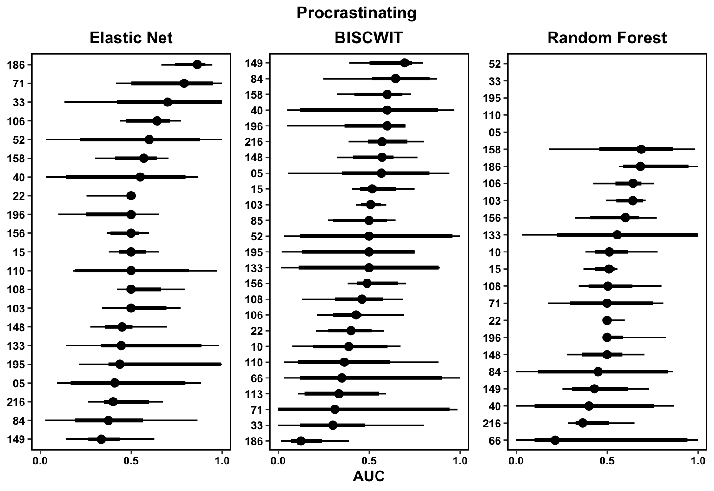

Chapter 6 Summarizing Models
Now that all the models have been run, the next step is to take various metrics and results from the models and format them into tables and figures that are more understable than thousands of model objects.
6.1 Question 1: Can we predict procrastination and loneliness?
6.1.1 Performance Metrics
To begin, we’ll pull the performance metrics – classification accuracy and area under the receiver operating curve (AUC) – to determine and display:
- Overall Model Performance
- Participant Specific Model Performance (e.g., did certain feature sets perform differently)
- Participants best models (in terms of accuracy and AUC) along with summaries of such accuracy and AUC, the feature set, etc.
The first thing we need to do is load in the final model performance metrics – that is, the accuracy and AUC of the model chosen via rolling-origin validation on the test / holdout set.
loadRData <- function(fileName, type, model){
#loads an RData file, and returns it
path <- sprintf("%s/05-results/%s/06-final-model-performance/%s", res_path, model, fileName)
load(path)
get(ls()[grepl(type, ls())])
}
sum_res <- tibble(
model = c("01-glmnet", "02-biscwit", "03-rf")
) %>%
mutate(file = map(model, ~sprintf("%s/05-results/%s/06-final-model-performance", res_path, .) %>%
list.files())) %>%
unnest(file) %>%
mutate(data = map2(file, model, ~loadRData(.x, "final_metrics", .y))) %>%
separate(file, c("SID", "outcome", "group", "set", "time"), sep = "_") %>%
mutate(time = str_remove_all(time, ".RData")
, model = str_remove_all(model, "[0-9 -]")); sum_res## # A tibble: 5,485 x 7
## model SID outcome group set time data
## <chr> <chr> <chr> <chr> <chr> <chr> <list>
## 1 glmnet 01 prcrst full all no time <tibble[,4] [2 × 4]>
## 2 glmnet 01 prcrst psychological Affect no time <tibble[,4] [2 × 4]>
## 3 glmnet 01 prcrst psychological all no time <tibble[,4] [2 × 4]>
## 4 glmnet 01 prcrst psychological BFI-2 no time <tibble[,4] [2 × 4]>
## 5 glmnet 01 prcrst situations all no time <tibble[,4] [2 × 4]>
## 6 glmnet 01 prcrst situations S8-I no time <tibble[,4] [2 × 4]>
## 7 glmnet 01 prcrst situations sit no time <tibble[,4] [2 × 4]>
## 8 glmnet 02 prcrst full all no time <tibble[,4] [2 × 4]>
## 9 glmnet 02 prcrst full all time <tibble[,4] [2 × 4]>
## 10 glmnet 02 prcrst psychological Affect no time <tibble[,4] [2 × 4]>
## # … with 5,475 more rowsWhich looks something like this:
sum_res %>%
unnest(data)## # A tibble: 10,970 x 10
## model SID outcome group set time .metric .estimator .estimate .config
## <chr> <chr> <chr> <chr> <chr> <chr> <chr> <chr> <dbl> <chr>
## 1 glmnet 01 prcrst full all no time accuracy binary 0.909 Preprocessor1_Model1
## 2 glmnet 01 prcrst full all no time roc_auc binary 0.4 Preprocessor1_Model1
## 3 glmnet 01 prcrst psychological Affect no time accuracy binary 0.909 Preprocessor1_Model1
## 4 glmnet 01 prcrst psychological Affect no time roc_auc binary 0.8 Preprocessor1_Model1
## 5 glmnet 01 prcrst psychological all no time accuracy binary 0.909 Preprocessor1_Model1
## 6 glmnet 01 prcrst psychological all no time roc_auc binary 0.4 Preprocessor1_Model1
## 7 glmnet 01 prcrst psychological BFI-2 no time accuracy binary 0.917 Preprocessor1_Model1
## 8 glmnet 01 prcrst psychological BFI-2 no time roc_auc binary 0.5 Preprocessor1_Model1
## 9 glmnet 01 prcrst situations all no time accuracy binary 0.818 Preprocessor1_Model1
## 10 glmnet 01 prcrst situations all no time roc_auc binary 0.7 Preprocessor1_Model1
## # … with 10,960 more rowsloadRData <- function(fileName, type, model){
#loads an RData file, and returns it
path <- sprintf("%s/05-results/%s/07-final-model-param/%s", res_path, model, fileName)
load(path)
get(ls()[grepl(type, ls())])
}
param_res <- tibble(
model = c("01-glmnet", "02-biscwit", "03-rf")
) %>%
mutate(file = map(model, ~sprintf("%s/05-results/%s/07-final-model-param", res_path, .) %>%
list.files())) %>%
unnest(file) %>%
mutate(params = map2(file, model, ~loadRData(.x, "best", .y))
, coefs = map2(file, model, ~loadRData(.x, "coef", .y))) %>%
separate(file, c("SID", "outcome", "group", "set", "time"), sep = "_") %>%
mutate(time = str_remove_all(time, ".RData")
, model = str_remove_all(model, "[0-9 -]")) 6.1.2 Classification Accuracy and AUC for all Models
Now that we’ve loaded in the results, the first thing that we’ll do is create tables on the performance of each model for all the tested feature sets. The goal here is less to make any specific argument with the results and more to just document them in a nice table format that is easier to read.
perf_tab_fun <- function(d, outcome, group, set, time){
# format groups, time, and outcomes to nice names
g <- str_to_title(group); s <- str_to_title(set)
tm <- if(time == "time") "With Time" else "Without Time"
o <- mapvalues(outcome, outcomes$trait, outcomes$long_name, warn_missing = F)
# create the caption
cap <- sprintf("<strong>Table SX</strong><br><em>Performance Metrics of the %s (%s) Feature Set %s Predicting %s", g, s, tm, o)
# call kable to create the html table
tab <- d %>%
kable(.
, "html"
, col.names = c("ID", rep(c("Accuracy", "AUC"), times = 3))
, align = c("r", rep("c", 6))
, digits = 2
, caption = cap
) %>%
kable_styling(full_width = F) %>%
add_header_above(c(" " = 1, "Elastic Net" = 2, "BISCWIT" = 2, "Random Forest" = 2))
# save the table to files
save_kable(tab, file = sprintf("%s/05-results/04-tables/01-participant-metrics/%s_%s_%s_%s.html", res_path, outcome, group, set, time))
# return the table object
return(tab)
}
sum_res_tab <- sum_res %>%
unnest(data) %>%
select(-.estimator, -.config) %>%
pivot_wider(names_from = c("model", ".metric")
, values_from = ".estimate") %>%
group_by(outcome, group, set, time) %>%
nest() %>%
ungroup() %>%
mutate(tab = pmap(list(data, outcome, group, set, time), perf_tab_fun))
sum_res_tab## # A tibble: 28 x 6
## outcome group set time data tab
## <chr> <chr> <chr> <chr> <list> <list>
## 1 prcrst full all no time <tibble[,7] [83 × 7]> <kablExtr [1]>
## 2 prcrst psychological Affect no time <tibble[,7] [89 × 7]> <kablExtr [1]>
## 3 prcrst psychological all no time <tibble[,7] [89 × 7]> <kablExtr [1]>
## 4 prcrst psychological BFI-2 no time <tibble[,7] [98 × 7]> <kablExtr [1]>
## 5 prcrst situations all no time <tibble[,7] [83 × 7]> <kablExtr [1]>
## 6 prcrst situations S8-I no time <tibble[,7] [83 × 7]> <kablExtr [1]>
## 7 prcrst situations sit no time <tibble[,7] [98 × 7]> <kablExtr [1]>
## 8 prcrst full all time <tibble[,7] [75 × 7]> <kablExtr [1]>
## 9 prcrst psychological Affect time <tibble[,7] [81 × 7]> <kablExtr [1]>
## 10 prcrst psychological all time <tibble[,7] [81 × 7]> <kablExtr [1]>
## # … with 18 more rowsNow I’ll print the tables in different tabs below. Here, I’m only showing the set with combined features for each category for parsimony. The full results are in the online materials under 05-results/04-tables/01-participant-metrics.
6.1.2.1 Procrastination
tmp <- sum_res_tab %>%
filter(set == "all" & outcome == "prcrst") %>%
mutate(group = sprintf("%s, %s", str_to_title(group), str_to_title(time)))
for(i in 1:nrow(tmp)){
cat(' \n\n##### ', tmp$group[i], '\n\n ', sep ="")
tmp$tab[[i]] %>%
scroll_box(height = "750px")
}6.1.2.1.1 Full, No Time
6.1.2.1.2 Psychological, No Time
6.1.2.1.3 Situations, No Time
6.1.2.1.4 Full, Time
6.1.2.1.5 Psychological, Time
6.1.2.1.6 Situations, Time
6.1.2.2 Loneliness
tmp <- sum_res_tab %>%
filter(set == "all" & outcome == "lonely") %>%
mutate(group = sprintf("%s, %s", str_to_title(group), str_to_title(time)))
for(i in 1:nrow(tmp)){
cat(' \n\n##### ', tmp$group[i], '\n\n ', sep ="")
tmp$tab[[i]] %>%
scroll_box(height = "750px")
}6.1.2.2.1 Full, No Time
6.1.2.2.2 Full, Time
6.1.2.2.3 Psychological, No Time
6.1.2.2.4 Psychological, Time
6.1.2.2.5 Situations, No Time
6.1.2.2.6 Situations, Time
rm(lonely)6.1.3 Best Models
Next, to get a more concise indication of how these models are performing, we will choose the best model in terms of accuracy and AUC for each participant, outcome, and model combination.
best_mods <- sum_res %>%
unnest(data) %>%
filter(set == "all") %>%
group_by(SID, outcome, .metric, model) %>%
filter(!is.na(.estimate) & .estimate != 1) %>%
arrange(desc(.estimate), model, group) %>%
slice_head(n = 1) %>%
ungroup(); best_mods## # A tibble: 817 x 10
## model SID outcome group set time .metric .estimator .estimate .config
## <chr> <chr> <chr> <chr> <chr> <chr> <chr> <chr> <dbl> <chr>
## 1 biscwit 01 prcrst full all no time accuracy binary 0.909 <NA>
## 2 glmnet 01 prcrst full all no time accuracy binary 0.909 Preprocessor1_Model1
## 3 rf 01 prcrst psychological all no time accuracy binary 0.909 Preprocessor1_Model1
## 4 biscwit 01 prcrst situations all no time roc_auc binary 0.85 <NA>
## 5 glmnet 01 prcrst situations all no time roc_auc binary 0.7 Preprocessor1_Model1
## 6 rf 01 prcrst full all no time roc_auc binary 0.556 Preprocessor1_Model1
## 7 biscwit 02 prcrst full all time accuracy binary 0.769 <NA>
## 8 glmnet 02 prcrst full all time accuracy binary 0.846 Preprocessor1_Model1
## 9 rf 02 prcrst full all no time accuracy binary 0.833 Preprocessor1_Model1
## 10 biscwit 02 prcrst situations all no time roc_auc binary 0.705 <NA>
## # … with 807 more rows6.1.3.1 Participant Summaries (Table)
Now that we have participants best models, the first thing we’ll do is create a summary of just how well participants’ best models actually performed. These Supplementary Tables will be split by outcome (procrastination, loneliness) and metric (accuracy, AUC) with each row giving details on which feature set was chosen for each method and what the accuracy or AUC for that method was.
px_bm_fun <- function(d, outcome, metric){
o <- mapvalues(outcome, outcomes$trait, outcomes$long_name, warn_missing = F)
m <- if(metric == "accuracy") "Accuracy" else "AUC"
cap <- sprintf("<strong>Table SX</strong><br><em>Feature Set and %s for Predicting %s for Each Participant's Best Model</em>", m, o)
tab <- d %>%
select(SID, contains("glmnet"), contains("biscwit"), contains("rf")) %>%
kable(.
, "html"
, digits = 2
, col.names = c("ID", rep(c("Feature Set", m), times = 3))
, align = c("r", rep(c("l", "c"), times = 3))
, cap = cap
) %>%
kable_styling(full_width = F) %>%
add_header_above(c(" " = 1, "Elastic Net" = 2, "BISCWIT" = 2, "Random Forest" = 2))
save_kable(tab, file = sprintf("%s/05-results/04-tables/02-participant-best-models/%s_%s.html", res_path, outcome, metric))
return(tab)
}
px_best_mods <- best_mods %>%
select(-.estimator, -.config, -set) %>%
mutate_at(vars(group, time), str_to_title) %>%
unite(group, group, time, sep = ", ") %>%
pivot_wider(names_from = "model"
, values_from = c("group", ".estimate")
, names_glue = "{model}_{.value}") %>%
group_by(outcome, .metric) %>%
nest() %>%
ungroup() %>%
mutate(tab = pmap(list(data, outcome, .metric), px_bm_fun)); px_best_mods## # A tibble: 4 x 4
## outcome .metric data tab
## <chr> <chr> <list> <list>
## 1 prcrst accuracy <tibble[,7] [89 × 7]> <kablExtr [1]>
## 2 prcrst roc_auc <tibble[,7] [89 × 7]> <kablExtr [1]>
## 3 lonely accuracy <tibble[,7] [51 × 7]> <kablExtr [1]>
## 4 lonely roc_auc <tibble[,7] [51 × 7]> <kablExtr [1]>6.1.3.1.1 Procrastination, Accuracy
px_best_mods$tab[[1]] %>%
scroll_box(height = "750px")| ID | Feature Set | Accuracy | Feature Set | Accuracy | Feature Set | Accuracy |
|---|---|---|---|---|---|---|
| 01 | Full, No Time | 0.91 | Full, No Time | 0.91 | Psychological, No Time | 0.91 |
| 02 | Full, Time | 0.85 | Full, Time | 0.77 | Full, No Time | 0.83 |
| 05 | Full, No Time | 0.92 | Full, No Time | 0.92 | Psychological, No Time | 0.92 |
| 09 | Psychological, No Time | 0.91 | Psychological, No Time | 0.91 | Psychological, No Time | 0.90 |
| 10 | Psychological, No Time | 0.82 | Psychological, No Time | 0.78 | ||
| 103 | Full, No Time | 0.62 | Situations, No Time | 0.69 | Full, No Time | 0.64 |
| 105 | Full, No Time | 0.92 | Situations, Time | 0.92 | Full, No Time | 0.92 |
| 106 | Full, Time | 0.88 | Full, Time | 0.81 | Full, Time | 0.87 |
| 107 | Full, No Time | 0.93 | Psychological, No Time | 0.93 | Situations, No Time | 0.93 |
| 108 | Full, No Time | 0.70 | Psychological, No Time | 0.70 | Situations, No Time | 0.58 |
| 110 | Full, No Time | 0.92 | Full, Time | 0.92 | Situations, No Time | 0.92 |
| 111 | Full, No Time | 0.90 | Full, No Time | 0.90 | Situations, No Time | 0.90 |
| 112 | Psychological, Time | 0.77 | Full, Time | 0.69 | Psychological, Time | 0.83 |
| 113 | Full, No Time | 0.90 | ||||
| 118 | Psychological, Time | 0.80 | Psychological, Time | 0.80 | Psychological, No Time | 0.62 |
| 119 | Psychological, Time | 0.64 | Full, No Time | 0.64 | Full, No Time | 0.57 |
| 123 | Situations, No Time | 0.87 | Psychological, Time | 0.67 | Full, No Time | 0.79 |
| 124 | Psychological, No Time | 0.64 | Full, No Time | 0.64 | Psychological, No Time | 0.60 |
| 126 | Psychological, Time | 0.58 | Psychological, Time | 0.58 | Full, Time | 0.73 |
| 129 | Psychological, No Time | 0.50 | Situations, No Time | 0.67 | Situations, No Time | 0.83 |
| 133 | Full, No Time | 0.90 | Full, No Time | 0.90 | Full, No Time | 0.90 |
| 135 | Full, No Time | 0.93 | Full, Time | 0.93 | Situations, No Time | 0.93 |
| 146 | Full, Time | 0.67 | Full, Time | 0.67 | Full, Time | 0.67 |
| 148 | Full, No Time | 0.58 | Situations, Time | 0.67 | Situations, No Time | 0.64 |
| 149 | Full, No Time | 0.58 | Full, No Time | 0.58 | Situations, No Time | 0.63 |
| 150 | Situations, No Time | 0.88 | Full, No Time | 0.72 | Situations, No Time | 0.83 |
| 152 | Full, No Time | 0.88 | Full, No Time | 0.88 | Situations, No Time | 0.88 |
| 155 | Situations, Time | 0.67 | Psychological, Time | 0.67 | Full, No Time | 0.59 |
| 156 | Full, No Time | 0.48 | Psychological, Time | 0.52 | Situations, No Time | 0.55 |
| 157 | Full, No Time | 0.90 | Full, No Time | 0.90 | Full, No Time | 0.95 |
| 158 | Situations, No Time | 0.73 | Full, No Time | 0.60 | Situations, No Time | 0.93 |
| 159 | Full, No Time | 0.90 | Full, No Time | 0.90 | Situations, No Time | 0.90 |
| 160 | Full, No Time | 0.89 | Full, No Time | 0.89 | Full, No Time | 0.89 |
| 162 | Full, No Time | 0.93 | Psychological, No Time | 0.93 | Situations, Time | 0.92 |
| 164 | Full, No Time | 0.96 | Situations, No Time | 0.96 | ||
| 165 | Full, No Time | 0.64 | Full, Time | 0.73 | Situations, No Time | 0.70 |
| 166 | Full, No Time | 0.67 | Full, No Time | 0.67 | Situations, No Time | 0.82 |
| 167 | Situations, Time | 0.73 | Full, No Time | 0.64 | Full, No Time | 0.78 |
| 168 | Full, No Time | 0.62 | Full, Time | 0.62 | Full, No Time | 0.85 |
| 169 | Psychological, No Time | 0.94 | Psychological, No Time | 0.94 | Psychological, No Time | 0.93 |
| 17 | Psychological, No Time | 0.64 | Psychological, Time | 0.62 | Situations, Time | 0.77 |
| 170 | Psychological, Time | 0.94 | Full, No Time | 0.85 | Full, No Time | 0.83 |
| 171 | Full, No Time | 0.96 | Full, No Time | 0.96 | Situations, No Time | 0.96 |
| 174 | Full, No Time | 0.96 | Full, No Time | 0.96 | Situations, No Time | 0.96 |
| 185 | Full, No Time | 0.95 | Psychological, Time | 0.95 | Full, No Time | 0.95 |
| 186 | Psychological, No Time | 0.80 | Full, No Time | 0.80 | Situations, No Time | 0.71 |
| 188 | Full, No Time | 0.92 | Full, No Time | 0.83 | Full, No Time | 0.92 |
| 189 | Psychological, Time | 0.83 | Situations, No Time | 0.83 | Situations, No Time | 0.82 |
| 190 | Psychological, No Time | 0.93 | Psychological, No Time | 0.93 | Psychological, Time | 0.93 |
| 192 | Full, No Time | 0.92 | Full, No Time | 0.92 | Full, No Time | 0.92 |
| 195 | Full, No Time | 0.94 | Full, No Time | 0.94 | Situations, No Time | 0.94 |
| 196 | Full, No Time | 0.83 | Psychological, No Time | 0.75 | Situations, No Time | 0.83 |
| 20 | Full, No Time | 0.79 | Psychological, No Time | 0.79 | Situations, No Time | 0.79 |
| 206 | Full, No Time | 0.89 | Full, No Time | 0.89 | Situations, No Time | 0.88 |
| 207 | Full, No Time | 0.86 | Full, No Time | 0.86 | Full, No Time | 0.85 |
| 21 | Situations, No Time | 0.60 | Situations, No Time | 0.67 | Full, Time | 0.57 |
| 211 | Psychological, No Time | 0.96 | Full, No Time | 0.96 | Situations, No Time | 0.96 |
| 212 | Full, Time | 0.95 | Psychological, No Time | 0.95 | Situations, No Time | 0.95 |
| 214 | Full, Time | 0.94 | Full, No Time | 0.94 | Situations, No Time | 0.93 |
| 216 | Full, No Time | 0.78 | Full, No Time | 0.78 | Full, No Time | 0.83 |
| 22 | Full, No Time | 0.71 | Full, No Time | 0.79 | Full, No Time | 0.82 |
| 220 | Situations, No Time | 0.92 | Psychological, Time | 0.73 | Full, No Time | 0.91 |
| 25 | Full, No Time | 0.75 | Psychological, No Time | 0.67 | Situations, No Time | 0.75 |
| 26 | Full, No Time | 0.81 | Full, Time | 0.79 | Full, Time | 0.85 |
| 27 | Full, No Time | 0.83 | Full, No Time | 0.75 | Full, Time | 0.89 |
| 30 | Full, Time | 0.92 | Full, Time | 0.92 | Full, Time | 0.92 |
| 31 | Full, No Time | 0.93 | Full, No Time | 0.93 | Psychological, No Time | 0.92 |
| 32 | Full, No Time | 0.86 | Situations, Time | 0.86 | Situations, No Time | 0.86 |
| 33 | Full, No Time | 0.91 | Full, Time | 0.91 | Situations, No Time | 0.91 |
| 35 | Full, No Time | 0.75 | Full, No Time | 0.67 | Full, No Time | 0.82 |
| 38 | Psychological, No Time | 0.73 | Situations, No Time | 0.67 | Situations, No Time | 0.64 |
| 40 | Full, No Time | 0.91 | Full, No Time | 0.91 | Full, No Time | 0.91 |
| 43 | Full, No Time | 0.91 | Situations, No Time | 0.91 | Full, No Time | 0.90 |
| 49 | Psychological, No Time | 0.64 | Psychological, No Time | 0.64 | Psychological, No Time | 0.50 |
| 51 | Psychological, No Time | 0.92 | Situations, No Time | 0.91 | Psychological, No Time | 0.91 |
| 52 | Full, No Time | 0.91 | Full, No Time | 0.91 | Situations, No Time | 0.91 |
| 53 | Full, No Time | 0.93 | Full, No Time | 0.93 | Situations, No Time | 0.93 |
| 61 | Psychological, No Time | 0.91 | Psychological, No Time | 0.91 | Psychological, No Time | 0.91 |
| 63 | Full, No Time | 0.91 | Full, No Time | 0.91 | Full, No Time | 0.91 |
| 66 | Full, No Time | 0.91 | Situations, No Time | 0.91 | ||
| 67 | Full, No Time | 0.64 | Full, No Time | 0.64 | Situations, No Time | 0.69 |
| 71 | Situations, No Time | 0.82 | Psychological, No Time | 0.91 | Full, No Time | 0.70 |
| 73 | Full, No Time | 0.93 | Psychological, No Time | 0.93 | Full, No Time | 0.92 |
| 74 | Full, No Time | 0.93 | Situations, No Time | 0.92 | ||
| 77 | Full, No Time | 0.90 | Full, No Time | 0.90 | Situations, No Time | 0.90 |
| 78 | Full, No Time | 0.91 | Full, No Time | 0.90 | ||
| 84 | Full, No Time | 0.92 | Full, No Time | 0.92 | Situations, No Time | 0.92 |
| 85 | Full, No Time | 0.85 | ||||
| 86 | Full, Time | 0.92 | Full, No Time | 0.93 | Full, No Time | 0.93 |
6.1.3.1.2 Procrastination, AUC
px_best_mods$tab[[2]] %>%
scroll_box(height = "750px")| ID | Feature Set | AUC | Feature Set | AUC | Feature Set | AUC |
|---|---|---|---|---|---|---|
| 01 | Situations, No Time | 0.70 | Situations, No Time | 0.85 | Full, No Time | 0.56 |
| 02 | Psychological, No Time | 0.50 | Situations, No Time | 0.70 | Full, Time | 0.50 |
| 05 | Full, No Time | 0.91 | Situations, No Time | 0.95 | Full, No Time | 0.50 |
| 09 | Psychological, No Time | 0.20 | Psychological, Time | 0.70 | Psychological, No Time | 0.11 |
| 10 | Psychological, No Time | 0.56 | Psychological, Time | 0.57 | ||
| 103 | Psychological, No Time | 0.78 | Full, No Time | 0.57 | Situations, No Time | 0.72 |
| 105 | Full, No Time | 0.92 | Full, No Time | 0.42 | Situations, No Time | 0.82 |
| 106 | Full, No Time | 0.71 | Situations, No Time | 0.50 | Psychological, Time | 0.69 |
| 107 | Situations, No Time | 0.86 | Full, No Time | 0.86 | Psychological, No Time | 0.83 |
| 108 | Full, No Time | 0.67 | Situations, Time | 0.59 | Psychological, Time | 0.65 |
| 110 | Full, No Time | 0.82 | Full, No Time | 0.64 | Situations, Time | 0.50 |
| 111 | Full, Time | 0.67 | Situations, Time | 0.89 | Psychological, No Time | 0.88 |
| 112 | Situations, Time | 0.70 | Psychological, Time | 0.87 | Psychological, Time | 0.85 |
| 113 | Situations, No Time | 0.56 | ||||
| 118 | Psychological, Time | 0.71 | Psychological, No Time | 0.29 | Psychological, No Time | 0.47 |
| 119 | Psychological, No Time | 0.69 | Situations, Time | 0.60 | Psychological, Time | 0.50 |
| 123 | Situations, No Time | 0.64 | Psychological, No Time | 0.69 | Situations, Time | 0.70 |
| 124 | Psychological, No Time | 0.50 | Psychological, Time | 0.79 | Situations, No Time | 0.58 |
| 126 | Situations, Time | 0.46 | Full, No Time | 0.77 | Full, No Time | 0.75 |
| 129 | Situations, No Time | 0.56 | Psychological, Time | 0.75 | Situations, No Time | 0.91 |
| 133 | Full, No Time | 0.33 | Psychological, No Time | 0.89 | Full, No Time | 0.89 |
| 135 | Full, No Time | 0.77 | Situations, Time | 0.77 | Psychological, No Time | 0.83 |
| 146 | Psychological, No Time | 0.54 | Situations, Time | 0.76 | Situations, No Time | 0.54 |
| 148 | Situations, Time | 0.49 | Psychological, No Time | 0.77 | Situations, No Time | 0.71 |
| 149 | Psychological, No Time | 0.44 | Psychological, Time | 0.75 | Situations, No Time | 0.75 |
| 150 | Psychological, No Time | 0.72 | Situations, No Time | 0.54 | Situations, No Time | 0.89 |
| 152 | Situations, No Time | 0.76 | Psychological, Time | 0.83 | Situations, No Time | 0.86 |
| 155 | Situations, Time | 0.71 | Situations, Time | 0.58 | Situations, No Time | 0.79 |
| 156 | Situations, No Time | 0.50 | Situations, No Time | 0.68 | Situations, No Time | 0.79 |
| 157 | Situations, No Time | 0.45 | Psychological, No Time | 0.79 | Situations, Time | 0.78 |
| 158 | Full, Time | 0.64 | Situations, No Time | 0.69 | Situations, Time | 0.85 |
| 159 | Full, Time | 0.50 | Situations, No Time | 0.69 | Situations, No Time | 0.67 |
| 160 | Situations, No Time | 0.94 | Psychological, Time | 0.84 | Full, No Time | 0.94 |
| 162 | Situations, No Time | 0.92 | Full, Time | 0.75 | Full, Time | 0.89 |
| 164 | Full, No Time | 0.91 | Full, No Time | 0.95 | ||
| 165 | Situations, No Time | 0.64 | Full, No Time | 0.71 | Full, Time | 0.95 |
| 166 | Full, No Time | 0.81 | Psychological, No Time | 0.53 | Situations, Time | 0.79 |
| 167 | Situations, Time | 0.77 | Situations, Time | 0.47 | Full, No Time | 0.67 |
| 168 | Full, No Time | 0.50 | Full, No Time | 0.70 | Full, No Time | 0.90 |
| 169 | Psychological, No Time | 0.80 | Psychological, Time | 0.40 | Psychological, No Time | 0.93 |
| 17 | Psychological, No Time | 0.88 | Situations, No Time | 0.58 | Full, Time | 0.78 |
| 170 | Situations, No Time | 0.91 | Psychological, No Time | 0.35 | Situations, No Time | 0.86 |
| 171 | Full, Time | 0.91 | Full, Time | 0.91 | Situations, No Time | 0.62 |
| 174 | Situations, No Time | 0.98 | Psychological, Time | 0.88 | Situations, No Time | 0.96 |
| 185 | Situations, No Time | 0.84 | Situations, Time | 0.89 | Situations, No Time | 0.53 |
| 186 | Full, Time | 0.93 | Situations, No Time | 0.16 | Situations, Time | 0.92 |
| 188 | Situations, Time | 0.55 | Psychological, Time | 0.91 | Situations, No Time | 0.55 |
| 189 | Psychological, No Time | 0.35 | Full, Time | 0.85 | Situations, No Time | 0.89 |
| 190 | Psychological, Time | 0.93 | Psychological, No Time | 0.79 | Psychological, Time | 0.86 |
| 192 | Situations, Time | 0.75 | Psychological, No Time | 0.83 | Situations, No Time | 0.67 |
| 195 | Full, No Time | 0.62 | Full, No Time | 0.75 | Psychological, No Time | 0.38 |
| 196 | Full, No Time | 0.50 | Situations, Time | 0.70 | Full, No Time | 0.67 |
| 20 | Psychological, No Time | 0.67 | Situations, No Time | 0.85 | Situations, No Time | 0.88 |
| 206 | Psychological, No Time | 0.41 | Situations, Time | 0.81 | Situations, No Time | 0.50 |
| 207 | Situations, No Time | 0.79 | Full, Time | 0.86 | Full, No Time | 0.91 |
| 21 | Situations, Time | 0.59 | Psychological, No Time | 0.56 | Psychological, Time | 0.52 |
| 211 | Psychological, No Time | 0.81 | Psychological, No Time | 0.88 | Situations, No Time | 0.56 |
| 212 | Full, No Time | 0.80 | Psychological, No Time | 0.55 | Full, Time | 0.78 |
| 214 | Full, Time | 0.87 | Psychological, Time | 0.87 | Situations, No Time | 0.93 |
| 216 | Situations, No Time | 0.68 | Full, No Time | 0.75 | Situations, Time | 0.49 |
| 22 | Full, No Time | 0.50 | Psychological, Time | 0.51 | Full, No Time | 0.50 |
| 220 | Situations, No Time | 0.50 | Full, Time | 0.90 | Full, No Time | 0.50 |
| 25 | Full, No Time | 0.78 | Full, No Time | 0.59 | Full, No Time | 0.50 |
| 26 | Psychological, Time | 0.67 | Psychological, Time | 0.70 | Full, No Time | 0.81 |
| 27 | Situations, No Time | 0.89 | Psychological, Time | 0.71 | Situations, No Time | 0.86 |
| 30 | Psychological, Time | 0.83 | Full, No Time | 0.79 | Full, No Time | 0.95 |
| 31 | Full, No Time | 0.92 | Situations, No Time | 0.81 | Situations, Time | 0.67 |
| 32 | Situations, No Time | 0.79 | Psychological, No Time | 0.54 | Psychological, No Time | 0.55 |
| 33 | Full, No Time | 0.80 | Full, No Time | 0.85 | Psychological, Time | 0.88 |
| 35 | Psychological, No Time | 0.67 | Situations, No Time | 0.43 | Situations, No Time | 0.61 |
| 38 | Situations, No Time | 0.44 | Full, Time | 0.73 | Psychological, Time | 0.55 |
| 40 | Psychological, Time | 0.70 | Full, No Time | 0.90 | Situations, Time | 0.60 |
| 43 | Psychological, No Time | 0.70 | Situations, No Time | 0.70 | Situations, No Time | 0.89 |
| 49 | Psychological, No Time | 0.87 | Psychological, No Time | 0.10 | Psychological, No Time | 0.50 |
| 51 | Full, No Time | 0.70 | Full, Time | 0.80 | Full, Time | 0.56 |
| 52 | Full, No Time | 0.90 | Situations, Time | 0.80 | Full, Time | 0.62 |
| 53 | Full, No Time | 0.79 | Situations, No Time | 0.64 | Psychological, Time | 0.50 |
| 61 | Psychological, Time | 0.80 | Psychological, Time | 0.70 | Psychological, No Time | 0.70 |
| 63 | Situations, Time | 0.80 | Full, No Time | 0.90 | Psychological, No Time | 0.80 |
| 66 | Psychological, No Time | 0.90 | Full, Time | 0.71 | ||
| 67 | Psychological, No Time | 0.44 | Psychological, Time | 0.98 | Psychological, No Time | 0.50 |
| 71 | Full, Time | 0.92 | Full, Time | 0.96 | Situations, Time | 0.71 |
| 73 | Psychological, No Time | 0.31 | Full, Time | 0.92 | Psychological, No Time | 0.75 |
| 74 | Full, No Time | 0.85 | Situations, Time | 0.92 | ||
| 77 | Psychological, No Time | 0.22 | Full, No Time | 0.78 | Full, No Time | 0.71 |
| 78 | Situations, No Time | 0.50 | ||||
| 84 | Psychological, Time | 0.42 | Full, No Time | 0.88 | Situations, No Time | 0.83 |
| 85 | Situations, No Time | 0.61 | ||||
| 86 | Psychological, Time | 0.92 | Full, No Time | 0.77 | Full, No Time | 0.85 |
6.1.3.1.3 Loneliness, Accuracy
px_best_mods$tab[[3]] %>%
scroll_box(height = "750px")| ID | Feature Set | Accuracy | Feature Set | Accuracy | Feature Set | Accuracy |
|---|---|---|---|---|---|---|
| 08 | Full, No Time | 0.83 | Full, No Time | 0.92 | Full, No Time | 0.82 |
| 10 | Psychological, No Time | 0.91 | Psychological, No Time | 0.91 | Psychological, No Time | 0.89 |
| 103 | Full, No Time | 0.94 | Full, No Time | 0.94 | Situations, No Time | 0.94 |
| 105 | Psychological, No Time | 0.80 | Psychological, No Time | 0.80 | Situations, No Time | 0.92 |
| 106 | Full, Time | 0.94 | Full, No Time | 0.94 | Situations, No Time | 0.94 |
| 108 | Full, Time | 0.80 | Psychological, No Time | 0.80 | Full, No Time | 0.81 |
| 112 | Full, No Time | 0.69 | Full, No Time | 0.69 | Situations, No Time | 0.69 |
| 118 | Psychological, Time | 0.80 | Psychological, Time | 0.70 | Psychological, Time | 0.62 |
| 119 | Full, No Time | 0.93 | Full, No Time | 0.93 | Full, No Time | 0.93 |
| 123 | Full, No Time | 0.93 | Full, No Time | 0.93 | Full, No Time | 0.93 |
| 129 | Psychological, No Time | 0.67 | Situations, No Time | 0.67 | Situations, Time | 0.75 |
| 133 | Full, No Time | 0.90 | Full, No Time | 0.90 | Full, No Time | 0.90 |
| 135 | Full, No Time | 0.93 | Full, No Time | 0.93 | Situations, No Time | 0.93 |
| 146 | Psychological, Time | 0.94 | Psychological, No Time | 0.95 | Psychological, No Time | 0.95 |
| 149 | Full, No Time | 0.95 | Full, No Time | 0.95 | Situations, No Time | 0.95 |
| 150 | Full, No Time | 0.96 | Full, No Time | 0.96 | Situations, No Time | 0.96 |
| 152 | Psychological, Time | 0.96 | Full, No Time | 0.92 | Situations, No Time | 0.92 |
| 154 | Full, Time | 0.94 | Full, No Time | 0.94 | Situations, No Time | 0.94 |
| 155 | Situations, Time | 0.61 | Psychological, No Time | 0.78 | Full, Time | 0.71 |
| 157 | Full, No Time | 0.90 | Full, No Time | 0.90 | Situations, No Time | 0.90 |
| 158 | Full, Time | 0.93 | Full, No Time | 0.93 | Full, No Time | 0.93 |
| 160 | Full, No Time | 0.83 | Full, No Time | 0.83 | Full, No Time | 0.83 |
| 164 | Full, No Time | 0.96 | Full, No Time | 0.96 | Situations, No Time | 0.96 |
| 167 | Full, No Time | 0.91 | Full, No Time | 0.91 | Situations, No Time | 0.90 |
| 168 | Psychological, No Time | 0.69 | Psychological, Time | 0.77 | Full, Time | 0.92 |
| 170 | Psychological, No Time | 0.95 | Psychological, No Time | 0.95 | Psychological, No Time | 0.94 |
| 18 | Full, No Time | 0.95 | Full, No Time | 0.95 | Situations, No Time | 0.94 |
| 185 | Full, No Time | 0.65 | Full, No Time | 0.70 | Full, No Time | 0.65 |
| 186 | Full, No Time | 0.93 | Full, No Time | 0.93 | Situations, No Time | 0.93 |
| 196 | Full, No Time | 0.92 | Full, No Time | 0.92 | Situations, No Time | 0.92 |
| 20 | Full, No Time | 0.93 | Full, No Time | 0.93 | Situations, No Time | 0.93 |
| 201 | Situations, No Time | 0.82 | Situations, No Time | 0.82 | Situations, No Time | 0.91 |
| 206 | Full, No Time | 0.89 | Full, No Time | 0.89 | Situations, No Time | 0.88 |
| 207 | Full, No Time | 0.86 | Psychological, No Time | 0.86 | Full, No Time | 0.85 |
| 211 | Psychological, No Time | 0.81 | Full, No Time | 0.81 | Full, No Time | 0.83 |
| 212 | Full, No Time | 0.95 | Full, No Time | 0.95 | Situations, No Time | 0.95 |
| 214 | Full, No Time | 0.75 | Full, No Time | 0.75 | Full, No Time | 0.75 |
| 220 | Full, No Time | 0.92 | Full, No Time | 0.92 | Full, No Time | 0.91 |
| 25 | Full, No Time | 0.75 | Psychological, No Time | 0.75 | Full, No Time | 0.70 |
| 27 | Full, No Time | 0.83 | Psychological, Time | 0.82 | Situations, No Time | 0.83 |
| 32 | Full, No Time | 0.93 | Full, No Time | 0.93 | Situations, No Time | 0.93 |
| 35 | Full, No Time | 0.83 | Psychological, No Time | 0.75 | Full, No Time | 0.82 |
| 36 | Full, No Time | 0.92 | Full, No Time | 0.92 | Situations, No Time | 0.91 |
| 43 | Situations, No Time | 0.91 | Situations, No Time | 0.91 | Situations, No Time | 0.90 |
| 51 | Situations, No Time | 0.82 | Psychological, Time | 0.75 | Psychological, No Time | 0.73 |
| 53 | Full, No Time | 0.93 | Full, No Time | 0.93 | Situations, No Time | 0.93 |
| 63 | Full, No Time | 0.91 | Full, No Time | 0.91 | Full, No Time | 0.91 |
| 67 | Situations, No Time | 0.93 | ||||
| 71 | Full, No Time | 0.91 | Full, No Time | 0.91 | Situations, No Time | 0.90 |
| 73 | Full, No Time | 0.93 | Full, No Time | 0.93 | Full, No Time | 0.92 |
| 84 | Full, No Time | 0.92 | Full, No Time | 0.92 | Situations, No Time | 0.92 |
6.1.3.1.4 Loneliness, AUC
px_best_mods$tab[[4]] %>%
scroll_box(height = "750px")| ID | Feature Set | AUC | Feature Set | AUC | Feature Set | AUC |
|---|---|---|---|---|---|---|
| 08 | Full, Time | 0.80 | Situations, Time | 0.30 | Full, Time | 0.78 |
| 10 | Psychological, Time | 0.80 | Psychological, No Time | 0.70 | Psychological, No Time | 0.88 |
| 103 | Situations, Time | 0.93 | Psychological, No Time | 0.87 | Psychological, Time | 0.92 |
| 105 | Psychological, Time | 0.72 | Full, No Time | 0.53 | Situations, No Time | 0.90 |
| 106 | Psychological, Time | 0.73 | Full, No Time | 0.97 | Psychological, No Time | 0.93 |
| 108 | Psychological, No Time | 0.50 | Situations, No Time | 0.86 | Situations, Time | 0.32 |
| 112 | Psychological, Time | 0.64 | Situations, No Time | 0.54 | Situations, Time | 0.75 |
| 118 | Psychological, Time | 0.44 | Psychological, No Time | 0.54 | Psychological, Time | 0.73 |
| 119 | Situations, No Time | 0.77 | Psychological, Time | 0.77 | Full, Time | 0.92 |
| 123 | Full, No Time | 0.93 | Situations, No Time | 0.50 | Full, No Time | 0.92 |
| 129 | Full, No Time | 0.86 | Situations, No Time | 0.29 | Situations, No Time | 0.97 |
| 133 | Situations, No Time | 0.33 | Situations, No Time | 0.94 | Situations, No Time | 0.89 |
| 135 | Psychological, Time | 0.92 | Full, No Time | 0.88 | Situations, No Time | 0.62 |
| 146 | Psychological, No Time | 0.89 | Situations, Time | 0.75 | Situations, Time | 0.50 |
| 149 | Psychological, No Time | 0.72 | Situations, Time | 0.94 | Full, Time | 0.86 |
| 150 | Situations, No Time | 0.83 | Psychological, No Time | 0.75 | Full, No Time | 0.95 |
| 152 | Full, No Time | 0.91 | Situations, Time | 0.34 | Full, No Time | 0.86 |
| 154 | Situations, Time | 0.93 | Psychological, No Time | 0.94 | Full, No Time | 0.86 |
| 155 | Situations, No Time | 0.48 | Situations, No Time | 0.64 | Psychological, Time | 0.86 |
| 157 | Full, No Time | 0.37 | Full, Time | 0.89 | Full, No Time | 0.94 |
| 158 | Psychological, Time | 0.93 | Situations, No Time | 0.89 | Full, Time | 0.92 |
| 160 | Situations, No Time | 0.78 | Full, Time | 0.42 | Full, Time | 0.79 |
| 164 | Psychological, Time | 0.86 | Situations, Time | 0.91 | Full, No Time | 0.70 |
| 167 | Situations, Time | 0.90 | Full, No Time | 0.60 | Psychological, No Time | 0.50 |
| 168 | Situations, No Time | 0.73 | Psychological, No Time | 0.48 | Psychological, Time | 0.97 |
| 170 | Psychological, No Time | 0.94 | Psychological, No Time | 0.22 | Psychological, No Time | 0.81 |
| 18 | Situations, Time | 0.72 | Psychological, No Time | 0.94 | Situations, No Time | 0.76 |
| 185 | Psychological, No Time | 0.52 | Psychological, Time | 0.68 | Full, No Time | 0.64 |
| 186 | Full, Time | 0.86 | Situations, Time | 0.93 | Psychological, No Time | 0.92 |
| 196 | Psychological, No Time | 0.82 | Situations, No Time | 0.41 | Full, No Time | 0.80 |
| 20 | Full, No Time | 0.08 | Full, No Time | 0.92 | Situations, No Time | 0.46 |
| 201 | Psychological, No Time | 0.83 | Situations, No Time | 0.69 | Full, No Time | 0.88 |
| 206 | Psychological, No Time | 0.69 | Situations, No Time | 0.72 | Psychological, No Time | 0.64 |
| 207 | Situations, Time | 0.95 | Psychological, No Time | 0.67 | Full, No Time | 0.86 |
| 211 | Situations, Time | 0.43 | Full, Time | 0.82 | Psychological, Time | 0.46 |
| 212 | Situations, No Time | 0.72 | Psychological, Time | 0.89 | Full, No Time | 0.78 |
| 214 | Situations, No Time | 0.58 | Psychological, Time | 0.48 | Situations, Time | 0.64 |
| 220 | Full, No Time | 0.64 | Situations, Time | 0.80 | Psychological, Time | 0.70 |
| 25 | Situations, No Time | 0.74 | Full, No Time | 0.59 | Situations, No Time | 0.74 |
| 27 | Full, Time | 0.83 | Situations, No Time | 0.62 | Full, No Time | 0.50 |
| 32 | Full, Time | 0.77 | Psychological, No Time | 0.92 | Psychological, No Time | 0.80 |
| 35 | Psychological, No Time | 0.75 | Situations, No Time | 0.85 | Full, No Time | 0.78 |
| 36 | Situations, Time | 0.60 | Situations, No Time | 0.91 | Situations, No Time | 0.70 |
| 43 | Full, No Time | 0.83 | Psychological, No Time | 0.67 | Situations, No Time | 0.88 |
| 51 | Full, Time | 0.83 | Situations, Time | 0.42 | Situations, No Time | 0.57 |
| 53 | Situations, No Time | 0.93 | Full, No Time | 0.75 | Situations, No Time | 0.93 |
| 63 | Situations, Time | 0.80 | Full, No Time | 0.90 | Psychological, No Time | 0.90 |
| 67 | Situations, Time | 0.54 | ||||
| 71 | Psychological, Time | 0.60 | Full, No Time | 0.90 | Situations, No Time | 0.56 |
| 73 | Psychological, No Time | 0.92 | Situations, No Time | 0.92 | Full, Time | 0.83 |
| 84 | Psychological, No Time | 0.75 | Situations, No Time | 0.67 | Psychological, No Time | 0.80 |
6.1.3.2 Classification Accuracy and AUC
6.1.3.2.1 Table
Similar to how we created tables for each outcome, feature set, and metric in the first section, we will next create a single, similar table for participants best models, summarizing the mean, standard deviation, median, and range for each outcome, method, and metric. In the manuscript, this will be summarized in a figure, but I’m still creating the table for ease of access.
bm_tab <- best_mods %>%
group_by(model, outcome, .metric) %>%
summarize_at(vars(.estimate), lst(mean, sd, median, min, max, n=~sum(!is.na(.)))) %>%
ungroup() %>%
mutate(sd = ifelse(sd < .01, "<.01", sprintf("%.2f", sd)),
mean = sprintf("%.2f (%s)", mean, sd),
range = sprintf("%.2f-%.2f", min, max),
median = sprintf("%.2f", median),
model = factor(model, levels = c("glmnet", "biscwit", "rf")),
.metric = factor(.metric, c("accuracy", "roc_auc"), c("Accuracy", "AUC"))
) %>%
select(-sd, -min, -max) %>%
pivot_wider(names_from = "outcome"
, values_from = c(mean, median, range, n)
, names_glue = "{outcome}_{.value}") %>%
arrange(model, .metric) %>%
select(.metric, contains("lonely"), contains("prcrst")) %>%
kable(.
, "html"
, escape = F
, col.names = c("Metric", rep(c("<em>M</em> (<em>SD</em>)", "Median", "Range", "<em>N</em>"), times = 2))
, align = c("r", rep("c",8))
, cap = "<strong>Table X</strong><br><em>Descriptive Statistics of Model Performance Across of the Best Performing Model for Each Participant</em>"
) %>%
kable_styling(full_width = F) %>%
kableExtra::group_rows("Elastic Net", 1, 2) %>%
kableExtra::group_rows("BISCWIT", 3, 4) %>%
kableExtra::group_rows("Random Forest", 5, 6) %>%
add_header_above(c(" " = 1, "Loneliness" = 4, "Procrastination" = 4)) %>%
footnote("Accuracy = Classification accuracy; AUC = Area under the receiver operating characteristic (ROC) curve.")
save_kable(bm_tab, file = sprintf("%s/05-results/04-tables/01-best-summary.html", res_path))
bm_tab| Metric | M (SD) | Median | Range | N | M (SD) | Median | Range | N |
|---|---|---|---|---|---|---|---|---|
| Elastic Net | ||||||||
| Accuracy | 0.87 (0.09) | 0.91 | 0.61-0.96 | 50 | 0.82 (0.13) | 0.88 | 0.48-0.96 | 82 |
| AUC | 0.74 (0.19) | 0.77 | 0.08-0.95 | 50 | 0.69 (0.19) | 0.70 | 0.20-0.98 | 82 |
| BISCWIT | ||||||||
| Accuracy | 0.87 (0.08) | 0.92 | 0.67-0.96 | 51 | 0.82 (0.12) | 0.88 | 0.52-0.96 | 89 |
| AUC | 0.71 (0.21) | 0.75 | 0.22-0.97 | 51 | 0.71 (0.18) | 0.75 | 0.10-0.98 | 89 |
| Random Forest | ||||||||
| Accuracy | 0.87 (0.09) | 0.91 | 0.62-0.96 | 50 | 0.83 (0.12) | 0.89 | 0.50-0.96 | 87 |
| AUC | 0.77 (0.16) | 0.80 | 0.32-0.97 | 50 | 0.71 (0.17) | 0.72 | 0.11-0.96 | 86 |
| Note: | ||||||||
| Accuracy = Classification accuracy; AUC = Area under the receiver operating characteristic (ROC) curve. | ||||||||
6.1.3.2.2 Figure (Figure 1)
Now, we’ll create distributions of the performance (accuracy, AUC) of participants’ best models and plot those along with the descriptive statistics that were created for the Supplementary Table in the previous section. This figure will become Figure 1 in the manuscript.
p_dist_fun <- function(d, outcome) {
o <- mapvalues(outcome, outcomes$trait, outcomes$long_name, warn_missing = F)
d %>%
mutate(model = factor(model, c("glmnet", "biscwit", "rf")
, c("Elastic Net", "BISCWIT", "Random Forest"))
, .metric = factor(.metric, c("accuracy", "roc_auc"), c("Accuracy", "AUC"))
, group = factor(str_to_title(group))) %>%
ggplot(aes(y = model, x = .estimate)) +
scale_x_continuous(limits = c(0,1), breaks = seq(0,1,.5)) +
geom_density_ridges(aes(fill = model), alpha = .5) +
stat_pointinterval() +
geom_vline(aes(xintercept = .5), linetype = "dashed") +
labs(x = NULL, y = NULL, title = o) +
facet_wrap(~.metric, scales = "free", nrow = 2) +
theme_classic() +
theme(legend.position = "none"
, axis.text = element_text(face = "bold")
, axis.title = element_text(face = "bold")
, strip.background = element_blank()
, strip.text.y = element_blank()
, plot.margin = margin(.1,.1,1,.1, unit = "cm")
, strip.text = element_text(face = "bold", size = rel(1.2))
, plot.title = element_text(face = "bold", size = rel(1.2), hjust = .5))
}
bm_dist <- best_mods %>%
group_by(outcome) %>%
nest() %>%
ungroup() %>%
mutate(p = map2(data, outcome, p_dist_fun))
tab_fun <- function(d){
tab <- d %>%
select(-model) %>%
setNames(c("M (SD)", "Median", "N", "Range")) %>%
tableGrob(rows = NULL
, theme = ttheme_minimal(base_family = "Times"))
tab <- gtable_add_grob(tab,
grobs = segmentsGrob( # line across the bottom
x0 = unit(0,"npc"),
y0 = unit(0,"npc"),
x1 = unit(1,"npc"),
y1 = unit(0,"npc"),
gp = gpar(lwd = 2.0)),
t = 1, b = 1, l = 1, ncol(tab))
tab$grobs[1:4] <- lapply(tab$grobs[1:4], function(x) {x$grobs[[1]]$gp$fontface = "bold"; return(x)})
return(tab)
}
bm_tbl <- best_mods %>%
group_by(model, outcome, .metric) %>%
summarize_at(vars(.estimate), lst(mean, sd, median, min, max, n=~sum(!is.na(.)))) %>%
ungroup() %>%
mutate(sd = ifelse(sd < .01, "<.01", sprintf("%.2f", sd)),
mean = sprintf("%.2f (%s)", mean, sd),
range = sprintf("%.2f-%.2f", min, max),
median = sprintf("%.2f", median),
model = factor(model, levels = c("glmnet", "biscwit", "rf"),
labels = c("Elastic Net", "BISCWIT", "Random Forest")),
.metric = factor(.metric, c("accuracy", "roc_auc"), c("Accuracy", "AUC"))
) %>%
select(-sd, -min, -max) %>%
arrange(outcome, .metric, model) %>%
group_by(outcome, .metric) %>%
nest() %>%
ungroup() %>%
mutate(tab = map(data, tab_fun))
my_theme <- function(...) {
theme_classic() +
theme(plot.title = element_text(face = "bold"))
}
title_theme <- calc_element("plot.title", my_theme())
ttl <- ggdraw() +
draw_label(
"Procrastination",
fontfamily = title_theme$family,
fontface = title_theme$face,
size = title_theme$size
)
bm_dist$p[[1]] <- bm_dist$p[[1]] + labs(title = NULL)
bm_tab1 <- plot_grid(bm_tbl$tab[[3]], bm_tbl$tab[[4]], nrow = 2, rel_heights = c(.4, .4))
bm_prcrst <- plot_grid(bm_dist$p[[1]], bm_tab1, ncol = 2)
bm_prcrst <- plot_grid(ttl, bm_prcrst, nrow = 2, rel_heights = c(.05,.95))
bm_dist$p[[2]] <- bm_dist$p[[2]] + labs(title = NULL) + theme(axis.text.y = element_blank())
ttl <- ggdraw() +
draw_label(
"Loneliness",
fontfamily = title_theme$family,
fontface = title_theme$face,
size = title_theme$size
)
bm_tab2 <- plot_grid(bm_tbl$tab[[1]], bm_tbl$tab[[2]], nrow = 2)
bm_lonely <- plot_grid(bm_dist$p[[2]], bm_tab2, ncol = 2, rel_widths = c(.4, .6))
bm_lonely <- plot_grid(ttl, bm_lonely, nrow = 2, rel_heights = c(.05,.95))
bm_plot <- plot_grid(bm_prcrst, bm_lonely, ncol = 2, rel_widths = c(.55, .45)); bm_plotFigure 6.1: Histograms of classification accuracy and Area Under the Receiver Operator Curve (AUC) for participants’ best models.
ggsave(bm_plot, file = sprintf("%s/05-results/05-figures/fig-1-best-models.pdf", res_path)
, width = 12, height = 5)6.1.4 Tuning Parameters (Table)
px_tun_par_tab_fun <- function(d, model, outcome){
if(model == "glmnet"){
cn <- c("ID","Group", "Penalty", "Mixture", "# Features", "Accuracy")
al <- c(rep("r", 2), rep("c", 4))
tab <- d %>% select(SID, group, penalty, mixture, nvars, .estimate) %>%
mutate(penalty = ifelse(penalty < .01, sprintf("%.1e", penalty), sprintf("%.2f", penalty))
, .estimate = sprintf("%.2f", .estimate)
, mixture = ifelse(mixture == 0, "0", sprintf("%.2f", mixture)))
} else if(model == "rf"){
cn <- c("ID","Group", "# Features Sampled", "Min N for Split", "# Features", "Accuracy")
al <- c(rep("r", 2), rep("c", 4))
tab <- d %>% select(SID, group, mtry, min_n, nvars, .estimate) %>%
mutate(.estimate = sprintf("%.2f", .estimate))
} else {
cn <- c("ID","Group", "# Items", "# Features", "Accuracy")
al <- c(rep("r", 2), rep("c", 3))
tab <- d %>% select(SID, group, nitem, nvars, .estimate) %>%
mutate(.estimate = sprintf("%.2f", .estimate))
}
o <- mapvalues(outcome, outcomes$trait, outcomes$long_name, warn_missing = F)
m <- mapvalues(model, c("glmnet", "rf", "biscwit"), c("Elastic Net", "Random Forest", "BISCWIT"))
cap <- sprintf("<strong>Table X</strong><br><em>Tuning Parameters, Final Number of Non-Zero Features, and Classifications Accuracy for Each Participants' Best Model of %s Using %s", o, m)
tab <- tab %>%
mutate(group = str_to_title(group)) %>%
kable(.
, "html"
, escape = "F"
, col.names = cn
, align = al
, cap = cap
) %>%
kable_styling(full_width = F)
save_kable(tab, file = sprintf("%s/05-results/04-tables/03-px-tuning-params/%s_%s.html", res_path, outcome, model))
return(tab)
}
tuning_param <- param_res %>%
right_join(best_mods %>% select(-.estimator, -.config)) %>%
select(-coefs) %>%
group_by(outcome, model) %>%
nest() %>%
ungroup() %>%
mutate(data = map(data, ~(.) %>% unnest(params) %>% filter(.metric == "accuracy")),
tab = pmap(list(data, model, outcome), px_tun_par_tab_fun))param_res %>%
right_join(best_mods %>% select(-.estimator, -.config)) %>%
pivot_wider(names_from = ".metric", values_from = ".estimate") %>%
select(-coefs, -set) %>%
unnest(params) %>%
select(-.config, -merror, -time) %>%
pivot_longer(cols = c(-(model:group))
, names_to = "param"
, values_to = "value"
, values_drop_na = T) %>%
group_by(model, outcome, group, param) %>%
summarize_at(vars(value), lst(mean, sd, min, max)) %>%
ungroup() %>%
mutate(mean = sprintf("%.2f (%.2f)", mean, sd),
range = sprintf("%.2f-%.2f", min, max)) %>%
select(-sd, -min, -max) %>%
pivot_wider(names_from = c("outcome", "group")
, values_from = c("mean", "range")
, names_glue = "{outcome}_{group}_{.value}") %>%
mutate(model = factor(model, c("glmnet", "biscwit", "rf"), c("Elastic Net", "BISCWIT", "Random Forest"))
, param = factor(param, c("accuracy", "roc_auc", "penalty", "mixture", "nitem", "min_n", "mtry", "nvars"), c("Accuracy", "AUC", "Penalty", "Mixture", "# Items", "Min N Split", "# Predictors Samples", "# Features Selected"))) %>%
arrange(model, param)## # A tibble: 14 x 14
## model param lonely_full_mean lonely_psycholog… lonely_situatio… prcrst_full_mean prcrst_psycholog…
## <fct> <fct> <chr> <chr> <chr> <chr> <chr>
## 1 Elasti… Accura… 0.89 (0.08) 0.84 (0.11) 0.79 (0.13) 0.84 (0.12) 0.78 (0.15)
## 2 Elasti… AUC 0.73 (0.25) 0.75 (0.15) 0.73 (0.18) 0.74 (0.17) 0.62 (0.21)
## 3 Elasti… Penalty 0.10 (0.29) 0.19 (0.39) 0.24 (0.42) 0.18 (0.38) 0.32 (0.46)
## 4 Elasti… Mixture 0.05 (0.18) 0.08 (0.25) 0.05 (0.13) 0.08 (0.19) 0.08 (0.22)
## 5 Elasti… # Feat… 47.82 (8.01) 30.19 (8.64) 28.18 (8.52) 46.74 (9.10) 29.28 (8.10)
## 6 BISCWIT Accura… 0.90 (0.07) 0.81 (0.08) 0.80 (0.12) 0.83 (0.11) 0.79 (0.14)
## 7 BISCWIT AUC 0.77 (0.18) 0.70 (0.21) 0.69 (0.22) 0.79 (0.12) 0.69 (0.20)
## 8 BISCWIT # Items 10.69 (11.03) 8.88 (7.52) 6.50 (4.90) 12.08 (11.58) 10.47 (8.34)
## 9 BISCWIT # Feat… 11.18 (9.98) 9.44 (7.08) 7.42 (4.21) 12.28 (9.85) 10.35 (6.72)
## 10 Random… Accura… 0.84 (0.09) 0.83 (0.14) 0.91 (0.06) 0.83 (0.11) 0.82 (0.15)
## 11 Random… AUC 0.82 (0.11) 0.79 (0.16) 0.70 (0.19) 0.73 (0.17) 0.64 (0.20)
## 12 Random… Min N … 16.91 (13.34) 19.18 (14.82) 13.66 (10.65) 16.84 (12.30) 17.21 (12.35)
## 13 Random… # Pred… 25.73 (15.98) 12.18 (7.60) 14.71 (7.45) 28.02 (15.91) 16.52 (9.50)
## 14 Random… # Feat… 58.82 (28.28) 38.88 (22.69) 28.09 (13.39) 53.12 (34.54) 35.28 (24.01)
## # … with 7 more variables: prcrst_situations_mean <chr>, lonely_full_range <chr>,
## # lonely_psychological_range <chr>, lonely_situations_range <chr>, prcrst_full_range <chr>,
## # prcrst_psychological_range <chr>, prcrst_situations_range <chr>6.2 Question 2: Are there individual differences in the idiographic range of prediction across people?
Next, rather than grouping performance information by the feature sets, we’ll group the feature sets by participant, demonstrating the mean, standard deviation, median, and range for each person to answer the range of prediction across people.
In the manuscript, we include a subset of this as a figure of a sample of 25 participants for each outcome. But below, we’ll create tables for each outcome, where each participant is a row to describe their results.
6.2.1 The Range of Prediction
6.2.1.1 Table
px_sum_tab <- function(d, outcome){
# clean up the outcome names
o <- mapvalues(outcome, outcomes$trait, outcomes$long_name, warn_missing = F)
# create the caption
cap <- sprintf("<strong>Table SX</strong><br><em>Descriptive Statistics of Model Performance for Each Participant for %s", outcome)
# create the span headers for the table
h1 <- c(1, rep(2, 6)); names(h1) <- c(" ", rep(c("Accuracy", "AUC"), times = 3))
h2 <- c(1, rep(4, 3)); names(h2) <- c(" ", "Elastic Net", "BISCWIT", "Random Forest")
# call the kable table
tab <- d %>%
kable(.
, "html"
, col.names = c("ID", rep(c("M (SD)", "Range"), times = 6))
, align = c("r", rep("c", 12))
, caption = cap
) %>%
kable_styling(full_width = F) %>%
add_header_above(h1) %>%
add_header_above(h2)
save_kable(tab, file = sprintf("%s/05-results/04-tables/04-participant-sum/%s.html", res_path, outcome))
return(tab)
}
# indexing the preferred column order
ord <- paste(rep(c("glmnet", "biscwit", "rf"), each = 6)
, rep(c("accuracy", "roc_auc"), each = 3, times = 3)
, rep(c("mean", "median", "range"), times = 6)
, sep = "_")
px_tabs <- sum_res %>%
unnest(data) %>%
group_by(SID, outcome, model, .metric) %>%
# summaries for each participant, outcome, model, and metric combinations
summarize_at(vars(.estimate), lst(mean, median, sd, min, max), na.rm = T) %>%
ungroup() %>%
mutate(sd = ifelse(sd < .01, "<.01", sprintf("%.2f", sd)),
mean = sprintf("%.2f (%s)", mean, sd),
range = sprintf("%.2f-%.2f", min, max),
median = sprintf("%.2f", median)) %>%
select(-sd, -min, -max) %>%
pivot_wider(names_from = c("model", ".metric")
, values_from = c("mean", "median", "range")
, names_glue = "{model}_{.metric}_{.value}") %>%
select(SID, outcome, ord) %>%
select(-contains("median")) %>%
group_by(outcome) %>%
nest() %>%
ungroup() %>%
mutate(tab = map2(data, outcome, px_sum_tab))6.2.1.1.1 Procrastination
px_tabs$tab[[1]] %>%
scroll_box(height = "750px")## procrastination| ID | M (SD) | Range | M (SD) | Range | M (SD) | Range | M (SD) | Range | M (SD) | Range | M (SD) | Range |
|---|---|---|---|---|---|---|---|---|---|---|---|---|
| 01 | 0.90 (0.04) | 0.82-0.92 | 0.51 (0.20) | 0.20-0.80 | 0.91 (<.01) | 0.91-0.92 | 0.66 (0.20) | 0.45-1.00 | 0.89 (0.03) | 0.83-0.91 | 0.43 (0.21) | 0.18-0.80 |
| 02 | 0.78 (0.10) | 0.54-0.85 | 0.40 (0.17) | 0.18-0.82 | 0.75 (0.07) | 0.62-0.85 | 0.64 (0.11) | 0.45-0.86 | 0.83 (<.01) | 0.83-0.85 | 0.43 (0.12) | 0.18-0.50 |
| 03 | 0.86 (0.09) | 0.73-0.91 | 0.57 (0.28) | 0.22-0.80 | 0.69 (0.11) | 0.60-0.82 | 0.42 (0.35) | 0.10-0.78 | 0.83 (0.15) | 0.60-0.91 | 0.46 (0.16) | 0.22-0.60 |
| 05 | 0.91 (0.02) | 0.85-0.92 | 0.45 (0.30) | 0.09-0.91 | 0.90 (0.05) | 0.83-1.00 | 0.57 (0.28) | 0.00-0.95 | 0.92 (0.02) | 0.91-1.00 | 0.43 (0.25) | 0.00-1.00 |
| 09 | 0.90 (0.03) | 0.83-0.92 | 0.39 (0.32) | 0.10-1.00 | 0.90 (0.03) | 0.83-0.92 | 0.48 (0.20) | 0.20-0.82 | 0.90 (<.01) | 0.89-0.91 | 0.26 (0.20) | 0.06-0.67 |
| 10 | 0.78 (0.04) | 0.75-0.82 | 0.39 (0.22) | 0.06-0.69 | 0.75 (0.04) | 0.70-0.80 | 0.54 (0.14) | 0.37-0.81 | ||||
| 103 | 0.62 (0.02) | 0.56-0.69 | 0.54 (0.14) | 0.33-0.78 | 0.61 (0.05) | 0.50-0.69 | 0.51 (0.05) | 0.42-0.60 | 0.62 (0.02) | 0.57-0.64 | 0.62 (0.08) | 0.49-0.72 |
| 105 | 0.85 (0.06) | 0.73-0.92 | 0.59 (0.21) | 0.17-0.92 | 0.82 (0.06) | 0.73-0.92 | 0.31 (0.15) | 0.12-0.69 | 0.86 (0.05) | 0.75-0.92 | 0.58 (0.20) | 0.33-1.00 |
| 106 | 0.80 (0.12) | 0.50-0.88 | 0.61 (0.12) | 0.43-0.79 | 0.74 (0.08) | 0.56-0.81 | 0.41 (0.14) | 0.21-0.79 | 0.79 (0.12) | 0.56-0.94 | 0.62 (0.10) | 0.42-0.79 |
| 107 | 0.88 (0.09) | 0.67-0.93 | 0.60 (0.34) | 0.00-1.00 | 0.92 (0.03) | 0.87-0.93 | 0.34 (0.30) | 0.00-0.93 | 0.93 (<.01) | 0.92-0.93 | 0.56 (0.27) | 0.00-1.00 |
| 108 | 0.62 (0.04) | 0.60-0.70 | 0.55 (0.12) | 0.39-0.85 | 0.56 (0.09) | 0.40-0.75 | 0.44 (0.16) | 0.09-0.70 | 0.57 (0.01) | 0.56-0.60 | 0.52 (0.14) | 0.32-0.83 |
| 11 | 0.74 (0.12) | 0.64-0.91 | 0.53 (0.45) | 0.00-1.00 | 0.71 (0.09) | 0.60-0.82 | 0.34 (0.31) | 0.10-0.78 | 0.74 (0.31) | 0.30-1.00 | 0.42 (0.12) | 0.33-0.50 |
| 110 | 0.85 (0.10) | 0.58-0.92 | 0.52 (0.28) | 0.18-1.00 | 0.83 (0.07) | 0.75-0.92 | 0.39 (0.28) | 0.00-1.00 | 0.85 (0.10) | 0.58-0.92 | 0.60 (0.22) | 0.36-1.00 |
| 111 | 0.76 (0.16) | 0.50-0.90 | 0.46 (0.31) | 0.00-1.00 | 0.77 (0.10) | 0.60-0.90 | 0.50 (0.32) | 0.00-1.00 | 0.89 (0.03) | 0.80-0.90 | 0.43 (0.20) | 0.00-0.88 |
| 112 | 0.64 (0.12) | 0.38-0.77 | 0.48 (0.21) | 0.22-0.81 | 0.67 (0.07) | 0.54-0.77 | 0.50 (0.27) | 0.14-0.87 | 0.58 (0.20) | 0.23-0.83 | 0.60 (0.14) | 0.38-0.85 |
| 113 | 0.86 (0.05) | 0.80-0.90 | 0.37 (0.18) | 0.11-0.61 | ||||||||
| 118 | 0.64 (0.08) | 0.55-0.80 | 0.67 (0.16) | 0.36-0.83 | 0.69 (0.06) | 0.64-0.80 | 0.37 (0.14) | 0.25-0.68 | 0.56 (0.16) | 0.25-0.82 | 0.58 (0.21) | 0.33-0.89 |
| 119 | 0.57 (0.04) | 0.43-0.64 | 0.53 (0.12) | 0.31-0.73 | 0.54 (0.07) | 0.36-0.64 | 0.48 (0.12) | 0.29-0.68 | 0.57 (<.01) | 0.57-0.57 | 0.46 (0.08) | 0.27-0.54 |
| 121 | 0.92 (<.01) | 0.92-0.92 | 0.57 (0.44) | 0.00-0.91 | 0.92 (<.01) | 0.92-0.92 | 0.56 (0.38) | 0.09-1.00 | 0.90 (<.01) | 0.90-0.91 | 0.57 (0.33) | 0.11-0.89 |
| 123 | 0.74 (0.11) | 0.47-0.87 | 0.49 (0.15) | 0.25-0.82 | 0.68 (0.11) | 0.53-0.93 | 0.45 (0.16) | 0.18-0.72 | 0.78 (0.03) | 0.71-0.80 | 0.46 (0.24) | 0.00-0.72 |
| 124 | 0.49 (0.11) | 0.30-0.64 | 0.40 (0.11) | 0.21-0.59 | 0.42 (0.08) | 0.33-0.64 | 0.61 (0.09) | 0.49-0.79 | 0.48 (0.11) | 0.27-0.60 | 0.44 (0.13) | 0.21-0.71 |
| 126 | 0.48 (0.10) | 0.25-0.58 | 0.39 (0.18) | 0.09-0.71 | 0.48 (0.10) | 0.33-0.58 | 0.60 (0.14) | 0.29-0.77 | 0.64 (0.08) | 0.42-0.73 | 0.61 (0.12) | 0.46-0.79 |
| 129 | 0.36 (0.09) | 0.17-0.50 | 0.38 (0.14) | 0.06-0.56 | 0.46 (0.18) | 0.25-0.75 | 0.58 (0.22) | 0.20-0.88 | 0.65 (0.15) | 0.42-0.92 | 0.63 (0.23) | 0.28-0.94 |
| 133 | 0.90 (<.01) | 0.90-0.90 | 0.56 (0.33) | 0.11-1.00 | 0.91 (0.04) | 0.90-1.00 | 0.45 (0.36) | 0.00-0.89 | 0.90 (<.01) | 0.90-0.90 | 0.58 (0.40) | 0.00-1.00 |
| 135 | 0.87 (0.13) | 0.43-0.93 | 0.48 (0.32) | 0.00-1.00 | 0.88 (0.05) | 0.79-0.93 | 0.48 (0.30) | 0.08-1.00 | 0.93 (0.02) | 0.92-1.00 | 0.56 (0.27) | 0.08-1.00 |
| 146 | 0.62 (0.05) | 0.53-0.68 | 0.46 (0.13) | 0.24-0.68 | 0.61 (0.05) | 0.53-0.67 | 0.56 (0.13) | 0.32-0.76 | 0.61 (0.06) | 0.53-0.68 | 0.39 (0.16) | 0.16-0.63 |
| 148 | 0.56 (0.08) | 0.33-0.67 | 0.45 (0.12) | 0.24-0.74 | 0.54 (0.10) | 0.33-0.67 | 0.55 (0.13) | 0.29-0.77 | 0.53 (0.09) | 0.36-0.64 | 0.47 (0.14) | 0.28-0.71 |
| 149 | 0.53 (0.08) | 0.44-0.63 | 0.36 (0.14) | 0.09-0.67 | 0.46 (0.12) | 0.28-0.68 | 0.65 (0.13) | 0.36-0.82 | 0.59 (0.05) | 0.53-0.68 | 0.46 (0.16) | 0.25-0.75 |
| 15 | 0.55 (0.07) | 0.45-0.64 | 0.51 (0.12) | 0.37-0.67 | 0.52 (0.14) | 0.36-0.64 | 0.55 (0.16) | 0.40-0.77 | 0.50 (<.01) | 0.50-0.50 | 0.49 (0.09) | 0.36-0.56 |
| 150 | 0.70 (0.23) | 0.20-0.88 | 0.56 (0.14) | 0.32-0.73 | 0.67 (0.05) | 0.60-0.76 | 0.48 (0.10) | 0.30-0.65 | 0.78 (0.08) | 0.62-0.83 | 0.74 (0.16) | 0.35-0.89 |
| 152 | 0.87 (0.01) | 0.83-0.88 | 0.42 (0.21) | 0.16-0.77 | 0.88 (<.01) | 0.88-0.88 | 0.60 (0.16) | 0.30-0.83 | 0.88 (<.01) | 0.87-0.88 | 0.65 (0.14) | 0.37-0.86 |
| 155 | 0.57 (0.04) | 0.56-0.67 | 0.55 (0.07) | 0.50-0.71 | 0.60 (0.05) | 0.50-0.67 | 0.45 (0.11) | 0.27-0.58 | 0.55 (0.06) | 0.47-0.67 | 0.56 (0.14) | 0.32-0.79 |
| 156 | 0.48 (0.01) | 0.48-0.52 | 0.48 (0.08) | 0.36-0.61 | 0.48 (0.03) | 0.43-0.52 | 0.53 (0.11) | 0.37-0.71 | 0.49 (0.05) | 0.45-0.57 | 0.58 (0.15) | 0.32-0.79 |
| 157 | 0.90 (0.02) | 0.85-0.90 | 0.34 (0.12) | 0.11-0.58 | 0.90 (<.01) | 0.90-0.90 | 0.64 (0.09) | 0.45-0.79 | 0.93 (0.02) | 0.90-0.95 | 0.68 (0.22) | 0.28-1.00 |
| 158 | 0.51 (0.16) | 0.27-0.73 | 0.53 (0.14) | 0.30-0.73 | 0.52 (0.10) | 0.33-0.67 | 0.57 (0.14) | 0.31-0.75 | 0.64 (0.15) | 0.40-0.93 | 0.65 (0.25) | 0.14-1.00 |
| 159 | 0.86 (0.08) | 0.65-0.90 | 0.43 (0.11) | 0.19-0.54 | 0.89 (0.02) | 0.84-0.90 | 0.54 (0.14) | 0.29-0.79 | 0.89 (<.01) | 0.88-0.90 | 0.43 (0.18) | 0.21-0.72 |
| 160 | 0.89 (<.01) | 0.89-0.89 | 0.65 (0.23) | 0.22-0.94 | 0.87 (0.03) | 0.83-0.89 | 0.43 (0.29) | 0.06-0.88 | 0.89 (<.01) | 0.88-0.89 | 0.71 (0.18) | 0.28-0.94 |
| 162 | 0.90 (0.05) | 0.77-0.93 | 0.50 (0.33) | 0.08-1.00 | 0.90 (0.05) | 0.77-0.93 | 0.58 (0.38) | 0.04-1.00 | 0.95 (0.04) | 0.90-1.00 | 0.63 (0.34) | 0.11-1.00 |
| 164 | 0.96 (<.01) | 0.96-0.96 | 0.44 (0.34) | 0.00-0.98 | 0.95 (<.01) | 0.95-0.96 | 0.67 (0.32) | 0.09-1.00 | ||||
| 165 | 0.61 (0.08) | 0.36-0.64 | 0.54 (0.14) | 0.29-0.71 | 0.61 (0.08) | 0.45-0.73 | 0.46 (0.18) | 0.25-0.71 | 0.61 (0.05) | 0.56-0.70 | 0.65 (0.20) | 0.50-1.00 |
| 166 | 0.67 (0.05) | 0.58-0.75 | 0.71 (0.10) | 0.47-0.81 | 0.60 (0.07) | 0.42-0.67 | 0.38 (0.12) | 0.20-0.59 | 0.70 (0.11) | 0.55-0.83 | 0.64 (0.13) | 0.43-0.80 |
| 167 | 0.58 (0.08) | 0.45-0.73 | 0.64 (0.12) | 0.30-0.77 | 0.56 (0.08) | 0.36-0.64 | 0.40 (0.11) | 0.23-0.60 | 0.61 (0.10) | 0.44-0.78 | 0.51 (0.12) | 0.22-0.67 |
| 168 | 0.57 (0.04) | 0.54-0.62 | 0.51 (0.05) | 0.43-0.66 | 0.51 (0.11) | 0.31-0.62 | 0.54 (0.10) | 0.40-0.70 | 0.69 (0.13) | 0.50-0.92 | 0.74 (0.15) | 0.50-0.90 |
| 169 | 0.94 (0.02) | 0.89-0.95 | 0.51 (0.35) | 0.06-0.94 | 0.94 (0.02) | 0.89-0.95 | 0.56 (0.36) | 0.00-1.00 | 0.95 (0.02) | 0.93-1.00 | 0.67 (0.26) | 0.14-0.93 |
| 17 | 0.40 (0.14) | 0.23-0.64 | 0.58 (0.21) | 0.14-0.88 | 0.47 (0.10) | 0.31-0.62 | 0.50 (0.17) | 0.20-0.75 | 0.46 (0.20) | 0.15-0.77 | 0.57 (0.13) | 0.33-0.78 |
| 170 | 0.81 (0.06) | 0.75-0.94 | 0.78 (0.14) | 0.50-0.97 | 0.79 (0.03) | 0.75-0.85 | 0.25 (0.11) | 0.13-0.50 | 0.68 (0.22) | 0.17-0.83 | 0.67 (0.15) | 0.39-0.86 |
| 171 | 0.96 (0.01) | 0.92-0.96 | 0.51 (0.33) | 0.00-1.00 | 0.96 (0.01) | 0.92-0.96 | 0.58 (0.30) | 0.12-0.91 | 0.96 (0.02) | 0.95-1.00 | 0.55 (0.28) | 0.19-1.00 |
| 174 | 0.96 (<.01) | 0.96-0.96 | 0.53 (0.30) | 0.04-0.98 | 0.96 (0.01) | 0.92-0.96 | 0.46 (0.30) | 0.04-0.88 | 0.96 (0.02) | 0.94-1.00 | 0.34 (0.38) | 0.00-0.96 |
| 177 | 0.92 (<.01) | 0.92-0.92 | 0.52 (0.04) | 0.50-0.58 | 0.83 (0.10) | 0.69-0.92 | 0.31 (0.20) | 0.17-0.58 | 0.94 (0.08) | 0.83-1.00 | 0.52 (0.03) | 0.50-0.55 |
| 185 | 0.94 (0.03) | 0.84-0.95 | 0.52 (0.30) | 0.00-1.00 | 0.92 (0.03) | 0.89-0.95 | 0.50 (0.32) | 0.00-0.89 | 0.95 (<.01) | 0.94-0.95 | 0.36 (0.27) | 0.00-0.89 |
| 186 | 0.72 (0.04) | 0.67-0.80 | 0.83 (0.09) | 0.66-0.95 | 0.75 (0.04) | 0.67-0.80 | 0.15 (0.11) | 0.00-0.43 | 0.70 (0.02) | 0.64-0.73 | 0.75 (0.17) | 0.56-1.00 |
| 188 | 0.89 (0.05) | 0.75-0.92 | 0.25 (0.19) | 0.00-0.55 | 0.86 (0.05) | 0.75-0.92 | 0.73 (0.17) | 0.41-1.00 | 0.91 (0.02) | 0.83-0.92 | 0.48 (0.11) | 0.36-0.82 |
| 189 | 0.61 (0.21) | 0.00-0.83 | 0.24 (0.14) | 0.00-0.55 | 0.72 (0.09) | 0.58-0.83 | 0.72 (0.21) | 0.45-1.00 | 0.78 (0.05) | 0.70-0.83 | 0.57 (0.16) | 0.33-0.89 |
| 190 | 0.93 (<.01) | 0.93-0.94 | 0.44 (0.24) | 0.06-0.93 | 0.89 (0.07) | 0.71-0.94 | 0.62 (0.29) | 0.07-1.00 | 0.91 (0.04) | 0.82-0.94 | 0.47 (0.23) | 0.00-0.86 |
| 192 | 0.88 (0.08) | 0.69-0.92 | 0.49 (0.30) | 0.08-1.00 | 0.92 (0.02) | 0.85-0.92 | 0.46 (0.35) | 0.00-1.00 | 0.92 (<.01) | 0.92-0.92 | 0.43 (0.23) | 0.00-0.67 |
| 195 | 0.94 (<.01) | 0.94-0.94 | 0.58 (0.32) | 0.19-1.00 | 0.94 (<.01) | 0.94-0.94 | 0.46 (0.31) | 0.00-0.75 | 0.94 (0.03) | 0.93-1.00 | 0.42 (0.40) | 0.03-1.00 |
| 196 | 0.82 (0.04) | 0.67-0.83 | 0.41 (0.17) | 0.05-0.70 | 0.69 (0.12) | 0.58-1.00 | 0.51 (0.22) | 0.00-0.70 | 0.83 (0.03) | 0.82-0.92 | 0.55 (0.11) | 0.50-0.90 |
| 20 | 0.60 (0.18) | 0.36-0.79 | 0.49 (0.17) | 0.12-0.76 | 0.71 (0.06) | 0.64-0.79 | 0.46 (0.24) | 0.23-0.94 | 0.76 (0.04) | 0.71-0.86 | 0.69 (0.18) | 0.42-0.97 |
| 206 | 0.89 (<.01) | 0.89-0.89 | 0.30 (0.14) | 0.12-0.56 | 0.89 (<.01) | 0.89-0.89 | 0.66 (0.16) | 0.36-0.81 | 0.93 (0.06) | 0.88-1.00 | 0.55 (0.22) | 0.17-0.80 |
| 207 | 0.85 (<.01) | 0.85-0.86 | 0.38 (0.31) | 0.00-0.96 | 0.85 (<.01) | 0.85-0.86 | 0.56 (0.35) | 0.02-0.86 | 0.85 (<.01) | 0.85-0.85 | 0.80 (0.16) | 0.50-1.00 |
| 21 | 0.52 (0.12) | 0.20-0.67 | 0.49 (0.16) | 0.20-0.72 | 0.57 (0.06) | 0.47-0.67 | 0.42 (0.13) | 0.22-0.70 | 0.57 (0.06) | 0.47-0.71 | 0.51 (0.17) | 0.33-0.83 |
| 211 | 0.96 (<.01) | 0.93-0.96 | 0.34 (0.26) | 0.08-0.96 | 0.96 (<.01) | 0.96-0.96 | 0.34 (0.32) | 0.04-0.88 | 0.98 (0.02) | 0.96-1.00 | 0.66 (0.24) | 0.36-1.00 |
| 212 | 0.93 (0.04) | 0.86-0.95 | 0.53 (0.14) | 0.28-0.80 | 0.92 (0.03) | 0.86-0.95 | 0.35 (0.22) | 0.00-0.74 | 0.95 (<.01) | 0.95-0.95 | 0.44 (0.34) | 0.00-0.95 |
| 214 | 0.92 (0.04) | 0.81-0.94 | 0.61 (0.26) | 0.13-1.00 | 0.93 (0.02) | 0.88-0.94 | 0.40 (0.29) | 0.00-0.87 | 0.93 (0.02) | 0.91-1.00 | 0.44 (0.33) | 0.00-0.93 |
| 216 | 0.78 (<.01) | 0.78-0.78 | 0.44 (0.14) | 0.25-0.68 | 0.78 (<.01) | 0.78-0.78 | 0.58 (0.13) | 0.38-0.83 | 0.80 (0.03) | 0.78-0.83 | 0.42 (0.12) | 0.27-0.69 |
| 22 | 0.65 (0.07) | 0.58-0.71 | 0.47 (0.08) | 0.20-0.50 | 0.66 (0.11) | 0.50-0.79 | 0.40 (0.14) | 0.20-0.60 | 0.70 (0.07) | 0.64-0.82 | 0.51 (0.04) | 0.50-0.64 |
| 220 | 0.80 (0.13) | 0.58-0.92 | 0.58 (0.27) | 0.18-1.00 | 0.67 (0.13) | 0.50-0.92 | 0.39 (0.31) | 0.00-0.90 | 0.90 (0.02) | 0.82-0.92 | 0.44 (0.21) | 0.00-0.90 |
| 25 | 0.65 (0.12) | 0.50-0.75 | 0.60 (0.13) | 0.43-0.78 | 0.54 (0.11) | 0.42-0.67 | 0.46 (0.15) | 0.22-0.61 | 0.71 (0.06) | 0.60-0.75 | 0.58 (0.14) | 0.50-0.85 |
| 26 | 0.80 (0.01) | 0.79-0.81 | 0.55 (0.09) | 0.33-0.67 | 0.77 (0.03) | 0.71-0.81 | 0.60 (0.09) | 0.44-0.73 | 0.81 (0.02) | 0.79-0.85 | 0.62 (0.13) | 0.46-0.81 |
| 27 | 0.66 (0.13) | 0.42-0.83 | 0.67 (0.17) | 0.34-0.89 | 0.54 (0.21) | 0.17-0.75 | 0.35 (0.28) | 0.00-0.77 | 0.59 (0.18) | 0.30-0.89 | 0.74 (0.16) | 0.39-0.95 |
| 30 | 0.85 (0.10) | 0.54-0.92 | 0.47 (0.28) | 0.12-0.92 | 0.86 (0.05) | 0.79-0.92 | 0.38 (0.28) | 0.00-0.79 | 0.89 (0.04) | 0.85-0.92 | 0.84 (0.27) | 0.18-1.00 |
| 31 | 0.90 (0.05) | 0.79-0.93 | 0.49 (0.36) | 0.00-1.00 | 0.93 (<.01) | 0.93-0.93 | 0.53 (0.31) | 0.00-1.00 | 0.92 (<.01) | 0.92-0.93 | 0.35 (0.21) | 0.00-0.67 |
| 32 | 0.83 (0.07) | 0.64-0.86 | 0.60 (0.16) | 0.33-0.79 | 0.80 (0.05) | 0.71-0.86 | 0.36 (0.16) | 0.17-0.71 | 0.84 (0.03) | 0.77-0.86 | 0.51 (0.06) | 0.41-0.68 |
| 33 | 0.91 (<.01) | 0.91-0.91 | 0.69 (0.30) | 0.10-1.00 | 0.90 (0.02) | 0.82-0.91 | 0.32 (0.24) | 0.00-0.85 | 0.92 (0.04) | 0.89-1.00 | 0.72 (0.32) | 0.00-1.00 |
| 35 | 0.73 (0.04) | 0.67-0.75 | 0.54 (0.09) | 0.44-0.67 | 0.68 (0.06) | 0.58-0.75 | 0.42 (0.10) | 0.28-0.54 | 0.80 (0.04) | 0.73-0.82 | 0.56 (0.25) | 0.11-0.89 |
| 38 | 0.58 (0.11) | 0.36-0.73 | 0.38 (0.13) | 0.15-0.62 | 0.53 (0.08) | 0.45-0.67 | 0.59 (0.18) | 0.15-0.80 | 0.52 (0.11) | 0.30-0.64 | 0.43 (0.16) | 0.08-0.65 |
| 40 | 0.90 (0.02) | 0.82-0.91 | 0.51 (0.31) | 0.00-0.90 | 0.90 (0.02) | 0.82-0.91 | 0.55 (0.34) | 0.05-1.00 | 0.91 (<.01) | 0.91-0.91 | 0.39 (0.31) | 0.00-0.90 |
| 43 | 0.86 (0.10) | 0.64-0.91 | 0.74 (0.21) | 0.40-1.00 | 0.83 (0.08) | 0.73-0.91 | 0.32 (0.19) | 0.10-0.70 | 0.87 (0.08) | 0.70-0.90 | 0.42 (0.33) | 0.00-0.89 |
| 44 | 0.48 (0.11) | 0.36-0.64 | 0.42 (0.15) | 0.20-0.53 | 0.55 (0.07) | 0.45-0.64 | 0.46 (0.15) | 0.33-0.60 | 0.43 (0.03) | 0.40-0.45 | 0.53 (0.07) | 0.50-0.63 |
| 49 | 0.60 (0.07) | 0.50-0.67 | 0.76 (0.10) | 0.63-0.87 | 0.61 (0.05) | 0.55-0.67 | 0.23 (0.11) | 0.10-0.39 | 0.57 (0.08) | 0.50-0.67 | 0.59 (0.12) | 0.50-0.78 |
| 51 | 0.92 (0.02) | 0.91-1.00 | 0.48 (0.25) | 0.09-1.00 | 0.75 (0.12) | 0.55-0.92 | 0.70 (0.29) | 0.10-1.00 | 0.89 (0.09) | 0.58-1.00 | 0.55 (0.16) | 0.36-1.00 |
| 52 | 0.91 (<.01) | 0.91-0.91 | 0.56 (0.33) | 0.00-1.00 | 0.91 (<.01) | 0.91-0.91 | 0.52 (0.37) | 0.00-1.00 | 0.92 (0.04) | 0.89-1.00 | 0.53 (0.30) | 0.10-1.00 |
| 53 | 0.88 (0.11) | 0.58-0.93 | 0.55 (0.29) | 0.09-1.00 | 0.92 (0.04) | 0.83-1.00 | 0.47 (0.35) | 0.00-1.00 | 0.93 (0.02) | 0.91-1.00 | 0.76 (0.27) | 0.20-1.00 |
| 56 | 0.90 (<.01) | 0.90-0.91 | 0.33 (0.46) | 0.00-1.00 | 0.90 (<.01) | 0.90-0.91 | 0.68 (0.46) | 0.00-1.00 | 0.90 (<.01) | 0.90-0.91 | 0.40 (0.45) | 0.00-1.00 |
| 61 | 0.91 (<.01) | 0.91-0.92 | 0.66 (0.37) | 0.10-1.00 | 0.91 (<.01) | 0.91-0.92 | 0.55 (0.41) | 0.00-1.00 | 0.91 (<.01) | 0.91-0.92 | 0.60 (0.31) | 0.09-0.90 |
| 63 | 0.91 (<.01) | 0.91-0.91 | 0.46 (0.34) | 0.00-1.00 | 0.90 (0.03) | 0.82-0.91 | 0.58 (0.25) | 0.00-0.90 | 0.90 (<.01) | 0.90-0.91 | 0.54 (0.24) | 0.11-1.00 |
| 66 | 0.91 (<.01) | 0.91-0.91 | 0.49 (0.37) | 0.00-1.00 | 0.89 (0.02) | 0.88-0.91 | 0.42 (0.40) | 0.00-1.00 | ||||
| 67 | 0.62 (0.08) | 0.36-0.64 | 0.23 (0.22) | 0.00-0.60 | 0.64 (0.02) | 0.57-0.64 | 0.73 (0.26) | 0.42-1.00 | 0.65 (0.04) | 0.62-0.69 | 0.39 (0.10) | 0.22-0.50 |
| 71 | 0.73 (0.04) | 0.64-0.82 | 0.76 (0.21) | 0.42-1.00 | 0.78 (0.16) | 0.55-1.00 | 0.41 (0.40) | 0.00-1.00 | 0.70 (<.01) | 0.70-0.73 | 0.50 (0.21) | 0.14-0.81 |
| 73 | 0.93 (<.01) | 0.92-0.93 | 0.22 (0.20) | 0.00-0.62 | 0.92 (0.03) | 0.85-0.93 | 0.70 (0.27) | 0.25-1.00 | 0.92 (0.02) | 0.85-0.92 | 0.56 (0.13) | 0.50-0.92 |
| 74 | 0.93 (<.01) | 0.93-0.93 | 0.70 (0.33) | 0.00-1.00 | 0.92 (<.01) | 0.92-0.92 | 0.45 (0.33) | 0.04-0.92 | ||||
| 77 | 0.86 (0.11) | 0.60-0.90 | 0.46 (0.40) | 0.00-1.00 | 0.90 (0.06) | 0.80-1.00 | 0.52 (0.37) | 0.00-0.89 | 0.88 (0.04) | 0.80-0.90 | 0.51 (0.24) | 0.11-0.71 |
| 78 | 0.91 (<.01) | 0.91-0.91 | 0.74 (0.36) | 0.10-1.00 | 0.90 (<.01) | 0.90-0.90 | 0.85 (0.26) | 0.44-1.00 | ||||
| 81 | 0.39 (<.01) | 0.38-0.40 | 0.57 (0.19) | 0.37-0.78 | 0.39 (<.01) | 0.38-0.40 | 0.45 (0.19) | 0.26-0.62 | 0.42 (0.03) | 0.38-0.46 | 0.45 (0.27) | 0.20-0.80 |
| 84 | 0.92 (<.01) | 0.92-0.92 | 0.39 (0.24) | 0.00-0.96 | 0.92 (<.01) | 0.92-0.92 | 0.63 (0.19) | 0.12-0.88 | 0.92 (<.01) | 0.91-0.92 | 0.46 (0.33) | 0.00-0.88 |
| 85 | 0.85 (<.01) | 0.85-0.85 | 0.47 (0.13) | 0.27-0.66 | ||||||||
| 86 | 0.81 (0.10) | 0.69-0.92 | 0.32 (0.35) | 0.00-0.92 | 0.92 (0.02) | 0.85-0.93 | 0.44 (0.38) | 0.00-1.00 | 0.93 (<.01) | 0.92-0.93 | 0.50 (0.29) | 0.08-1.00 |
| 88 | 0.45 (0.24) | 0.20-0.70 | 0.42 (0.29) | 0.11-0.67 | 0.70 (0.12) | 0.60-0.80 | 0.58 (0.29) | 0.33-0.89 | 0.48 (0.30) | 0.10-0.80 | 0.18 (0.14) | 0.00-0.33 |
6.2.1.1.2 Loneliness
px_tabs$tab[[2]] %>%
scroll_box(height = "750px")## loneliness| ID | M (SD) | Range | M (SD) | Range | M (SD) | Range | M (SD) | Range | M (SD) | Range | M (SD) | Range |
|---|---|---|---|---|---|---|---|---|---|---|---|---|
| 03 | 0.90 (<.01) | 0.90-0.91 | 0.21 (0.10) | 0.10-0.33 | 0.90 (<.01) | 0.90-0.91 | 0.69 (0.15) | 0.56-0.90 | 0.90 (<.01) | 0.90-0.91 | 0.46 (0.05) | 0.40-0.50 |
| 08 | 0.49 (0.22) | 0.17-0.83 | 0.62 (0.24) | 0.15-1.00 | 0.79 (0.11) | 0.58-0.92 | 0.25 (0.14) | 0.05-0.45 | 0.48 (0.31) | 0.17-0.82 | 0.52 (0.14) | 0.22-0.78 |
| 10 | 0.88 (0.10) | 0.64-0.92 | 0.61 (0.26) | 0.09-0.91 | 0.91 (<.01) | 0.91-0.92 | 0.43 (0.24) | 0.18-0.82 | 0.90 (<.01) | 0.89-0.92 | 0.60 (0.32) | 0.11-0.89 |
| 103 | 0.92 (0.03) | 0.88-0.94 | 0.63 (0.27) | 0.13-0.93 | 0.92 (0.04) | 0.81-0.94 | 0.42 (0.24) | 0.07-0.87 | 0.93 (<.01) | 0.93-0.94 | 0.59 (0.22) | 0.27-0.92 |
| 105 | 0.74 (0.09) | 0.47-0.82 | 0.59 (0.14) | 0.33-0.83 | 0.79 (0.07) | 0.62-0.88 | 0.42 (0.13) | 0.23-0.75 | 0.83 (0.06) | 0.73-0.92 | 0.73 (0.14) | 0.50-0.95 |
| 106 | 0.93 (0.02) | 0.88-0.94 | 0.54 (0.25) | 0.20-1.00 | 0.92 (0.03) | 0.88-0.94 | 0.51 (0.25) | 0.07-0.97 | 0.93 (<.01) | 0.93-0.94 | 0.69 (0.29) | 0.00-0.93 |
| 108 | 0.77 (0.10) | 0.45-0.80 | 0.32 (0.14) | 0.10-0.50 | 0.74 (0.07) | 0.55-0.80 | 0.62 (0.11) | 0.45-0.86 | 0.80 (0.01) | 0.79-0.81 | 0.32 (0.10) | 0.23-0.55 |
| 11 | 0.88 (0.04) | 0.82-0.91 | 0.59 (0.29) | 0.30-0.89 | 0.90 (<.01) | 0.90-0.91 | 0.75 (0.43) | 0.11-1.00 | 0.95 (0.06) | 0.89-1.00 | 0.71 (0.06) | 0.67-0.75 |
| 112 | 0.68 (0.04) | 0.54-0.69 | 0.46 (0.19) | 0.17-0.72 | 0.69 (<.01) | 0.69-0.69 | 0.38 (0.24) | 0.11-0.88 | 0.68 (0.01) | 0.67-0.69 | 0.66 (0.12) | 0.47-0.83 |
| 118 | 0.59 (0.21) | 0.30-0.82 | 0.37 (0.16) | 0.11-0.61 | 0.66 (0.08) | 0.55-0.82 | 0.47 (0.19) | 0.22-0.75 | 0.66 (0.11) | 0.50-0.82 | 0.38 (0.24) | 0.00-0.73 |
| 119 | 0.93 (<.01) | 0.93-0.93 | 0.46 (0.25) | 0.08-0.85 | 0.93 (<.01) | 0.93-0.93 | 0.59 (0.26) | 0.15-1.00 | 0.93 (<.01) | 0.93-0.93 | 0.49 (0.17) | 0.23-0.92 |
| 121 | 0.90 (0.04) | 0.83-0.92 | 0.32 (0.40) | 0.09-0.91 | 0.88 (0.05) | 0.83-0.92 | 0.78 (0.18) | 0.64-1.00 | 0.93 (0.05) | 0.90-1.00 | 0.24 (0.23) | 0.10-0.50 |
| 123 | 0.91 (0.06) | 0.73-1.00 | 0.76 (0.20) | 0.43-1.00 | 0.93 (<.01) | 0.93-0.93 | 0.24 (0.25) | 0.00-0.64 | 0.93 (<.01) | 0.93-0.93 | 0.71 (0.31) | 0.15-1.00 |
| 129 | 0.60 (0.06) | 0.50-0.75 | 0.76 (0.11) | 0.49-0.94 | 0.60 (0.04) | 0.58-0.67 | 0.27 (0.17) | 0.06-0.66 | 0.59 (0.09) | 0.50-0.83 | 0.81 (0.12) | 0.60-0.97 |
| 133 | 0.87 (0.08) | 0.70-0.90 | 0.52 (0.42) | 0.00-1.00 | 0.90 (<.01) | 0.90-0.90 | 0.42 (0.33) | 0.00-0.94 | 0.90 (<.01) | 0.90-0.90 | 0.56 (0.38) | 0.11-1.00 |
| 135 | 0.88 (0.11) | 0.64-0.93 | 0.55 (0.25) | 0.15-0.92 | 0.93 (<.01) | 0.93-0.93 | 0.60 (0.24) | 0.15-0.92 | 0.96 (0.04) | 0.93-1.00 | 0.53 (0.15) | 0.27-0.77 |
| 146 | 0.93 (0.02) | 0.86-0.95 | 0.62 (0.27) | 0.07-0.90 | 0.93 (0.01) | 0.91-0.95 | 0.36 (0.19) | 0.05-0.75 | 0.93 (0.01) | 0.90-0.95 | 0.45 (0.30) | 0.00-1.00 |
| 149 | 0.94 (0.01) | 0.89-0.95 | 0.54 (0.19) | 0.12-0.89 | 0.95 (<.01) | 0.94-0.95 | 0.61 (0.25) | 0.22-0.94 | 0.94 (<.01) | 0.93-0.95 | 0.45 (0.28) | 0.06-0.86 |
| 15 | 0.59 (0.09) | 0.55-0.73 | 0.38 (0.21) | 0.17-0.56 | 0.50 (0.12) | 0.36-0.64 | 0.60 (0.14) | 0.44-0.78 | 0.60 (0.22) | 0.30-0.80 | 0.42 (0.19) | 0.25-0.69 |
| 150 | 0.95 (0.02) | 0.88-0.96 | 0.48 (0.27) | 0.08-0.83 | 0.95 (0.01) | 0.92-0.96 | 0.42 (0.27) | 0.04-0.88 | 0.96 (<.01) | 0.95-0.96 | 0.86 (0.16) | 0.48-1.00 |
| 152 | 0.92 (0.01) | 0.92-0.96 | 0.70 (0.15) | 0.48-0.91 | 0.92 (<.01) | 0.92-0.92 | 0.24 (0.15) | 0.05-0.59 | 0.92 (<.01) | 0.91-0.92 | 0.77 (0.15) | 0.45-0.96 |
| 154 | 0.87 (0.10) | 0.71-1.00 | 0.63 (0.36) | 0.00-1.00 | 0.93 (0.02) | 0.88-0.94 | 0.46 (0.37) | 0.03-1.00 | 0.94 (<.01) | 0.93-0.94 | 0.74 (0.22) | 0.17-1.00 |
| 155 | 0.53 (0.11) | 0.28-0.67 | 0.47 (0.09) | 0.32-0.64 | 0.58 (0.12) | 0.28-0.78 | 0.47 (0.09) | 0.30-0.64 | 0.61 (0.06) | 0.47-0.71 | 0.64 (0.13) | 0.43-0.86 |
| 157 | 0.90 (0.01) | 0.86-0.90 | 0.28 (0.18) | 0.06-0.74 | 0.90 (<.01) | 0.90-0.90 | 0.77 (0.21) | 0.21-1.00 | 0.90 (<.01) | 0.89-0.90 | 0.82 (0.19) | 0.44-1.00 |
| 158 | 0.87 (0.11) | 0.67-1.00 | 0.56 (0.39) | 0.00-1.00 | 0.90 (0.06) | 0.80-1.00 | 0.45 (0.39) | 0.00-1.00 | 0.93 (<.01) | 0.93-0.93 | 0.72 (0.27) | 0.15-1.00 |
| 160 | 0.83 (<.01) | 0.83-0.83 | 0.39 (0.26) | 0.02-0.79 | 0.83 (<.01) | 0.83-0.83 | 0.54 (0.33) | 0.08-1.00 | 0.83 (<.01) | 0.82-0.83 | 0.65 (0.15) | 0.36-0.83 |
| 164 | 0.96 (<.01) | 0.96-0.96 | 0.53 (0.33) | 0.00-1.00 | 0.96 (<.01) | 0.96-0.96 | 0.63 (0.30) | 0.09-1.00 | 0.95 (<.01) | 0.95-0.96 | 0.44 (0.27) | 0.05-1.00 |
| 167 | 0.91 (0.04) | 0.82-1.00 | 0.67 (0.31) | 0.20-1.00 | 0.90 (0.04) | 0.82-1.00 | 0.39 (0.30) | 0.00-0.90 | 0.93 (0.05) | 0.89-1.00 | 0.56 (0.40) | 0.00-1.00 |
| 168 | 0.52 (0.16) | 0.31-0.77 | 0.59 (0.15) | 0.35-0.81 | 0.65 (0.12) | 0.46-0.85 | 0.31 (0.10) | 0.17-0.47 | 0.66 (0.17) | 0.38-0.92 | 0.86 (0.09) | 0.75-1.00 |
| 170 | 0.93 (0.01) | 0.92-0.95 | 0.80 (0.28) | 0.22-1.00 | 0.94 (0.04) | 0.88-1.00 | 0.21 (0.28) | 0.00-0.80 | 0.92 (0.02) | 0.88-0.94 | 0.64 (0.19) | 0.38-0.94 |
| 18 | 0.95 (<.01) | 0.95-0.95 | 0.57 (0.29) | 0.00-1.00 | 0.95 (<.01) | 0.95-0.95 | 0.52 (0.31) | 0.00-0.94 | 0.94 (0.03) | 0.88-1.00 | 0.46 (0.32) | 0.06-1.00 |
| 185 | 0.64 (0.02) | 0.58-0.65 | 0.37 (0.13) | 0.17-0.52 | 0.61 (0.07) | 0.47-0.70 | 0.57 (0.12) | 0.41-0.77 | 0.63 (0.02) | 0.61-0.65 | 0.51 (0.12) | 0.29-0.73 |
| 186 | 0.92 (0.03) | 0.87-0.93 | 0.46 (0.34) | 0.00-1.00 | 0.93 (0.02) | 0.87-0.93 | 0.43 (0.34) | 0.00-1.00 | 0.93 (<.01) | 0.92-0.93 | 0.44 (0.37) | 0.00-1.00 |
| 196 | 0.90 (0.05) | 0.75-0.92 | 0.67 (0.25) | 0.27-1.00 | 0.86 (0.09) | 0.75-1.00 | 0.24 (0.26) | 0.00-0.82 | 0.88 (0.05) | 0.75-0.92 | 0.65 (0.16) | 0.50-0.91 |
| 20 | 0.93 (<.01) | 0.93-0.93 | 0.15 (0.15) | 0.00-0.46 | 0.93 (<.01) | 0.93-0.93 | 0.91 (0.12) | 0.58-1.00 | 0.91 (0.13) | 0.62-1.00 | 0.43 (0.09) | 0.31-0.54 |
| 201 | 0.66 (0.15) | 0.36-0.82 | 0.51 (0.18) | 0.28-0.83 | 0.69 (0.15) | 0.45-0.82 | 0.52 (0.23) | 0.11-0.81 | 0.76 (0.17) | 0.60-1.00 | 0.73 (0.28) | 0.28-1.00 |
| 206 | 0.89 (<.01) | 0.89-0.89 | 0.54 (0.07) | 0.44-0.69 | 0.88 (0.02) | 0.83-0.89 | 0.44 (0.15) | 0.28-0.72 | 0.85 (0.04) | 0.81-0.88 | 0.43 (0.11) | 0.27-0.64 |
| 207 | 0.76 (0.13) | 0.46-0.86 | 0.71 (0.18) | 0.38-0.95 | 0.85 (0.02) | 0.79-0.86 | 0.42 (0.17) | 0.18-0.71 | 0.85 (0.04) | 0.77-0.92 | 0.68 (0.23) | 0.27-1.00 |
| 211 | 0.79 (0.03) | 0.69-0.81 | 0.38 (0.05) | 0.27-0.46 | 0.80 (0.02) | 0.77-0.81 | 0.65 (0.09) | 0.50-0.82 | 0.77 (0.13) | 0.35-0.83 | 0.39 (0.07) | 0.28-0.57 |
| 212 | 0.95 (<.01) | 0.95-0.95 | 0.40 (0.26) | 0.05-0.74 | 0.95 (<.01) | 0.95-0.95 | 0.58 (0.25) | 0.00-0.95 | 0.96 (0.02) | 0.95-1.00 | 0.54 (0.28) | 0.08-0.94 |
| 214 | 0.75 (<.01) | 0.75-0.75 | 0.50 (0.10) | 0.33-0.62 | 0.74 (0.02) | 0.69-0.75 | 0.43 (0.05) | 0.31-0.48 | 0.75 (0.02) | 0.73-0.80 | 0.67 (0.14) | 0.48-0.93 |
| 220 | 0.91 (0.03) | 0.82-0.92 | 0.34 (0.29) | 0.00-0.90 | 0.91 (<.01) | 0.91-0.92 | 0.61 (0.28) | 0.09-1.00 | 0.91 (<.01) | 0.91-0.92 | 0.45 (0.21) | 0.14-0.70 |
| 25 | 0.73 (0.06) | 0.67-0.83 | 0.53 (0.19) | 0.26-0.78 | 0.71 (0.08) | 0.58-0.83 | 0.47 (0.15) | 0.15-0.59 | 0.69 (0.06) | 0.58-0.75 | 0.64 (0.09) | 0.50-0.74 |
| 27 | 0.83 (0.03) | 0.75-0.91 | 0.64 (0.15) | 0.50-0.94 | 0.73 (0.08) | 0.64-0.91 | 0.35 (0.21) | 0.06-0.62 | 0.81 (0.02) | 0.78-0.83 | 0.49 (0.03) | 0.40-0.50 |
| 32 | 0.70 (0.29) | 0.07-0.93 | 0.33 (0.31) | 0.00-0.92 | 0.92 (0.03) | 0.86-0.93 | 0.57 (0.30) | 0.23-1.00 | 0.87 (0.07) | 0.77-0.93 | 0.62 (0.27) | 0.00-1.00 |
| 35 | 0.80 (0.11) | 0.58-0.92 | 0.43 (0.33) | 0.12-1.00 | 0.74 (0.11) | 0.58-0.92 | 0.57 (0.30) | 0.05-0.93 | 0.79 (0.05) | 0.73-0.83 | 0.67 (0.15) | 0.50-0.83 |
| 36 | 0.86 (0.10) | 0.64-1.00 | 0.59 (0.30) | 0.18-1.00 | 0.92 (0.02) | 0.91-1.00 | 0.43 (0.35) | 0.00-1.00 | 0.90 (0.04) | 0.82-1.00 | 0.43 (0.34) | 0.00-1.00 |
| 43 | 0.81 (0.06) | 0.73-0.91 | 0.62 (0.21) | 0.33-0.83 | 0.83 (0.06) | 0.73-0.91 | 0.42 (0.31) | 0.06-0.94 | 0.81 (0.04) | 0.80-0.90 | 0.66 (0.15) | 0.50-0.88 |
| 51 | 0.66 (0.12) | 0.33-0.82 | 0.59 (0.18) | 0.27-0.83 | 0.72 (0.12) | 0.45-0.92 | 0.33 (0.18) | 0.07-0.70 | 0.73 (0.06) | 0.60-0.83 | 0.54 (0.09) | 0.48-0.78 |
| 53 | 0.92 (0.03) | 0.83-0.93 | 0.53 (0.29) | 0.08-1.00 | 0.92 (<.01) | 0.92-0.93 | 0.46 (0.28) | 0.00-0.77 | 0.93 (0.02) | 0.91-1.00 | 0.53 (0.34) | 0.00-0.93 |
| 58 | 0.92 (<.01) | 0.92-0.92 | 0.37 (0.23) | 0.17-0.64 | 0.91 (<.01) | 0.91-0.92 | 0.50 (0.35) | 0.14-0.91 | ||||
| 63 | 0.90 (0.03) | 0.82-0.91 | 0.51 (0.25) | 0.20-0.90 | 0.90 (0.02) | 0.82-0.91 | 0.53 (0.29) | 0.10-0.90 | 0.93 (0.04) | 0.90-1.00 | 0.73 (0.20) | 0.40-1.00 |
| 67 | 0.86 (0.02) | 0.86-0.93 | 0.37 (0.18) | 0.15-0.62 | ||||||||
| 68 | 0.89 (0.05) | 0.82-0.91 | 0.42 (0.44) | 0.00-0.90 | 0.91 (<.01) | 0.91-0.91 | 0.59 (0.34) | 0.10-0.90 | 0.90 (<.01) | 0.90-0.91 | 0.46 (0.42) | 0.00-1.00 |
| 71 | 0.91 (<.01) | 0.91-0.91 | 0.59 (0.39) | 0.00-1.00 | 0.90 (0.05) | 0.73-0.91 | 0.47 (0.37) | 0.00-1.00 | 0.89 (0.04) | 0.80-0.91 | 0.57 (0.25) | 0.28-1.00 |
| 73 | 0.93 (<.01) | 0.92-0.93 | 0.56 (0.31) | 0.15-1.00 | 0.93 (<.01) | 0.92-0.93 | 0.52 (0.32) | 0.00-0.92 | 0.92 (<.01) | 0.92-0.92 | 0.85 (0.16) | 0.50-1.00 |
| 84 | 0.92 (<.01) | 0.92-0.92 | 0.60 (0.19) | 0.38-1.00 | 0.92 (<.01) | 0.92-0.92 | 0.29 (0.21) | 0.08-0.71 | 0.92 (<.01) | 0.91-0.92 | 0.51 (0.34) | 0.00-0.90 |
| 88 | 0.90 (<.01) | 0.90-0.90 | 0.42 (0.50) | 0.00-1.00 | 0.90 (<.01) | 0.90-0.90 | 0.50 (0.28) | 0.11-0.78 | 0.89 (0.01) | 0.88-0.90 | 0.72 (0.26) | 0.44-1.00 |
6.2.1.2 Figure (Figure 2)
Now, we’ll create the figure that samples 25 participants ranges. We’ll create separate figures for each outcome (Procrastination, Loneliness) and metric (accuracy, AUC), which will be in Supplemental Materials (05-results/05/figures/01-px-sum-dist). Then, we’ll create a combined version for accuracy and both outcomes that will become Figure 2 in the manuscript.
px_sum_plot <- function(d, metric, outcome, model){
m <- if(metric == "accuracy") "Accuracy" else "AUC"
mod <- mapvalues(model, c("glmnet", "biscwit", "rf"), c("Elastic Net", "BISCWIT", "Random Forest"), warn_missing = F)
# set.seed(6)
d %>%
# filter(SID %in% sample(SID, 25)) %>%
mutate(SID = forcats::fct_reorder(SID, .estimate, median)) %>%
ggplot(aes(x = SID, y = .estimate)) +
scale_y_continuous(limits = c(0,1), breaks = seq(0,1,.5)) +
stat_pointinterval() +
labs(x = NULL, y = m, title = mod) +
coord_flip() +
# facet_grid(. ~ , scales = "free", space = "free") +
theme_classic() +
theme(plot.title = element_text(face = "bold", size = rel(1.2), hjust = .5)
, axis.text = element_text(face = "bold", color = "black")
, axis.title = element_text(face = "bold", size = rel(1.1))
, axis.line = element_blank()
, panel.background = element_rect(color = "black", size = 1)
# , plot.margin = margin(1,.1,.1,.1, unit = "cm")
)
}
combine_px_plots <- function(d, outcome, metric){
o <- mapvalues(outcome, outcomes$trait, outcomes$long_name, warn_missing = F)
my_theme <- function(...) {
theme_classic() +
theme(plot.title = element_text(face = "bold"))
}
title_theme <- calc_element("plot.title", my_theme())
ttl <- ggdraw() +
draw_label(
o,
fontfamily = title_theme$family,
fontface = title_theme$face,
size = title_theme$size
)
p1 <- d$p[[1]] + labs(y = ""); p2 <- d$p[[2]]; p3 <- d$p[[3]] + labs(y = "")
p <- cowplot::plot_grid(p1, p2, p3, nrow = 1, axis = "b")
p <- plot_grid(ttl, p, nrow = 2, rel_heights = c(.05,.95))
ggsave(p, file = sprintf("%s/05-results/05-figures/01-px-sum-dist/%s_%s.pdf"
, res_path, outcome, metric)
, width = 8
# , height = if(outcome == "lonely") 8 else 11)
, height = 5)
return(p)
}
set.seed(8)
px_plots_sum <- sum_res %>%
unnest(data) %>%
group_by(outcome) %>%
filter(SID %in% sample(unique(SID), 25)) %>%
group_by(outcome, .metric, model) %>%
nest() %>%
ungroup() %>%
mutate(model = factor(model, c("glmnet", "biscwit", "rf"))
, p = pmap(list(data, .metric, outcome, model), px_sum_plot)) %>%
arrange(outcome, model, .metric) %>%
group_by(outcome, .metric) %>%
nest() %>%
ungroup() %>%
mutate(p = pmap(list(data, outcome, .metric), combine_px_plots))
p <- cowplot::plot_grid(px_plots_sum$p[[3]], px_plots_sum$p[[1]]
, nrow = 2)
ggsave(p, file = sprintf("%s/05-results/05-figures/fig-2-accuracy.pdf"
, res_path)
, width = 8, height = 10)6.2.1.2.1 Procrastination, Accuracy
px_plots_sum$p[[3]]
6.2.1.2.2 Procrastination, AUC
px_plots_sum$p[[4]] 
6.2.1.2.3 Loneliness, Accuracy
px_plots_sum$p[[1]]
6.2.1.2.4 Loneliness, AUC
px_plots_sum$p[[2]] 
6.3 Question 3: Do Psychological, Situational, or Full Feature Sets Perform Best?
To answer the question of whether psychological, situational, or full feature sets (with or without time) perform best, we’ll pull the performance metric data we’ve been working with and combine it with information about specific coefficinets.
6.3.1 Psychological Features, Situations, or Time?
6.3.1.1 Table
ord <- paste(rep(c("lonely", "prcrst"), each = 6)
, rep(c("glmnet", "biscwit", "rf"), each = 2, times = 2)
, rep(c("n", "perc"), times = 6)
, sep = "_")
fps_tab <- best_mods %>%
group_by(model, outcome, group, time, .metric) %>%
tally() %>%
group_by(model, outcome, .metric) %>%
mutate(perc = n/(sum(n, na.rm = T))*100
, perc = sprintf("%.1f%%",perc)) %>%
ungroup() %>%
pivot_wider(names_from = c("outcome", "model")
, values_from = c("n", "perc")
, names_glue = "{outcome}_{model}_{.value}"
, names_sort = T) %>%
mutate_all(~ifelse(is.na(.), "0", .)) %>%
arrange(.metric, group, time) %>%
mutate(group = factor(str_to_title(group))
, time = factor(time, c("no time", "time"), c("No", "Yes"))) %>%
select(group, time, ord) %>%
kable(.
, "html"
, escape = F
, col.names = c("Set", "Time", rep(c("#", "%"), times = 6))
, align = c("r", "r", rep("c", 12))
, cap = "<strong>Table X</strong><br><em>Frequencies of the Full, Psychological, and Situation Feature Sets with or Without Time Being the Best Model for a Participant</em>"
) %>%
kable_styling(full_width = F) %>%
collapse_rows(1) %>%
kableExtra::group_rows("Accuracy", 1, 6) %>%
kableExtra::group_rows("AUC", 7, 12) %>%
add_header_above(c(" " = 2, "Elastic Net" = 2, "BISCWIT" = 2, "Random Forest" = 2,
"Elastic Net" = 2, "BISCWIT" = 2, "Random Forest" = 2)) %>%
add_header_above(c(" " = 2, "Loneliness" = 6, "Procrastination" = 6))
save_kable(fps_tab, file = sprintf("%s/05-results/04-tables/02-feature-perf-tab.html", res_path))
fps_tab| Set | Time | # | % | # | % | # | % | # | % | # | % | # | % |
|---|---|---|---|---|---|---|---|---|---|---|---|---|---|
| Accuracy | |||||||||||||
| Full | No | 33 | 66.0% | 34 | 66.7% | 16 | 32.0% | 49 | 59.8% | 45 | 50.6% | 27 | 31.0% |
| Full | Yes | 4 | 8.0% | 0 | 0 | 2 | 4.0% | 7 | 8.5% | 11 | 12.4% | 7 | 8.0% |
| Psychological | No | 6 | 12.0% | 9 | 17.6% | 4 | 8.0% | 12 | 14.6% | 15 | 16.9% | 11 | 12.6% |
| Psychological | Yes | 3 | 6.0% | 4 | 7.8% | 1 | 2.0% | 6 | 7.3% | 8 | 9.0% | 2 | 2.3% |
| Situations | No | 3 | 6.0% | 4 | 7.8% | 26 | 52.0% | 6 | 7.3% | 7 | 7.9% | 38 | 43.7% |
| Situations | Yes | 1 | 2.0% | 0 | 0 | 1 | 2.0% | 2 | 2.4% | 3 | 3.4% | 2 | 2.3% |
| AUC | |||||||||||||
| Full | No | 7 | 14.0% | 9 | 17.6% | 13 | 26.0% | 19 | 23.2% | 19 | 21.3% | 17 | 19.8% |
| Full | Yes | 5 | 10.0% | 3 | 5.9% | 6 | 12.0% | 7 | 8.5% | 9 | 10.1% | 8 | 9.3% |
| Psychological | No | 11 | 22.0% | 11 | 21.6% | 9 | 18.0% | 20 | 24.4% | 16 | 18.0% | 13 | 15.1% |
| Psychological | Yes | 9 | 18.0% | 4 | 7.8% | 6 | 12.0% | 8 | 9.8% | 16 | 18.0% | 10 | 11.6% |
| Situations | No | 10 | 20.0% | 15 | 29.4% | 12 | 24.0% | 19 | 23.2% | 18 | 20.2% | 27 | 31.4% |
| Situations | Yes | 8 | 16.0% | 9 | 17.6% | 4 | 8.0% | 9 | 11.0% | 11 | 12.4% | 11 | 12.8% |
6.3.1.2 Figure (Figure 3)
Next, to demonstrate the relative performance of feature sets and coefficients within those feature sets, we’ll create a series of sequence plots that show the proportion of features from each category for each participant. This will become Figure 3.
seq_plot_fun <- function(d, outcome, model){
o <- mapvalues(outcome, outcomes$trait, outcomes$long_name)
m <- mapvalues(model, c("glmnet", "biscwit", "rf")
, c("Elastic Net", "BISCWIT", "Random Forest")
, warn_missing = F)
ord <- (d %>%
select(-n) %>%
pivot_wider(names_from = "category", values_from = "perc") %>%
arrange(desc(psychological)))$SID
p <- d %>%
mutate(SID = factor(SID, levels = ord),
category = factor(category,rev(unique(category))
, str_to_title(rev(unique(category))))) %>%
ggplot(aes(x = SID
, y = perc
, rev = T)
) +
scale_fill_manual(values = c("lightgoldenrod1", "seagreen3", "deepskyblue4")) +
geom_bar(aes(fill = category)
, stat = "identity"
) +
labs(x = "Participant ID"
, y = "Percentage"
, fill = "Feature Category"
, title = m) +
coord_flip() +
theme_classic() +
theme(legend.position = "bottom"
, axis.text.y = element_blank()
, axis.ticks.y = element_blank()
, axis.text.x = element_text(face = "bold", size = rel(1.2), color = "black")
, axis.title = element_text(face = "bold", size = rel(1.2))
, legend.text = element_text(face = "bold")
, legend.title = element_text(face = "bold")
, plot.title = element_text(face = "bold", hjust = .5)
)
return(p)
}
## first get counts and percentages and create each plot for each outcome and model
seq_plot <- param_res %>%
right_join(best_mods %>% filter(.metric == "accuracy") %>% select(model:time)) %>%
select(-params) %>%
filter(map_lgl(coefs, is.null) == F) %>%
mutate(coefs = map(coefs, ~(.) %>% data.frame() %>% rownames_to_column("Variable") %>% setNames(c("Variable", "coef")))) %>%
unnest(coefs) %>%
mutate(Variable = str_remove_all(Variable, "_X1"),
Variable = str_remove_all(Variable, "_1"),
Variable = str_remove_all(Variable, "_2"),
Variable = str_replace_all(Variable, "[.]", "_")) %>%
filter(coef != 0) %>%
left_join(ftrs %>% select(category = group, Variable = old_name, new_name)) %>%
filter(!is.na(category)) %>%
group_by(SID, outcome, model, category) %>%
tally() %>%
group_by(SID, outcome, model) %>%
mutate(perc = n/sum(n)*100) %>%
group_by(outcome, model) %>%
nest() %>%
ungroup() %>%
mutate(p = pmap(list(data, outcome, model), seq_plot_fun))
# seq_plot <- seq_plot %>%
# unnest(data) %>%
# group_by(outcome, SID, category) %>%
# summarize(perc = mean(perc, na.rm = T)) %>%
# ungroup() %>%
# mutate(model = "combined") %>%
# group_by(outcome, model) %>%
# nest() %>%
# ungroup() %>%
# full_join(seq_plot) %>%
# mutate(p = pmap(list(data, outcome), seq_plot_fun))
my_theme <- function(...) {
theme_classic() +
theme(plot.title = element_text(face = "bold"))
}
title_theme <- calc_element("plot.title", my_theme())
legend <- get_legend(seq_plot$p[[1]])
seq_plot <- seq_plot %>% mutate(p = map(p, ~(.) + theme(legend.position = "none")))
p1 <- plot_grid(
(seq_plot %>% filter(outcome == "prcrst" & model == "glmnet"))$p[[1]] +
labs(y = NULL)
, (seq_plot %>% filter(outcome == "prcrst" & model == "biscwit"))$p[[1]]+
labs(x = NULL, y = NULL)
, (seq_plot %>% filter(outcome == "prcrst" & model == "rf"))$p[[1]]+
labs(x = NULL, y = NULL)
, nrow = 1
, axis = "b"
, align = "hv"
)
ttl <- ggdraw() + draw_label("Procrastination", fontface = title_theme$face)
p1 <- plot_grid(ttl, p1, nrow = 2, rel_heights = c(.05, .95))
p2 <- plot_grid(
(seq_plot %>% filter(outcome == "lonely" & model == "glmnet"))$p[[1]] +
labs(y = NULL, title = NULL)
, (seq_plot %>% filter(outcome == "lonely" & model == "biscwit"))$p[[1]]+
labs(x = NULL, title = NULL)
, (seq_plot %>% filter(outcome == "lonely" & model == "rf"))$p[[1]]+
labs(x = NULL, y = NULL, title = NULL)
, nrow = 1
, axis = "b"
, align = "hv"
)
ttl <- ggdraw() + draw_label("Loneliness", fontface = title_theme$face)
p2 <- plot_grid(ttl, p2, nrow = 2, rel_heights = c(.05, .95))
p <- plot_grid(p1, p2, nrow = 2, rel_heights = c(.6, .4))
p <- plot_grid(p, legend, nrow = 2, rel_heights = c(.95, .05)); p
Figure 6.2: Figure 3. Sequence plots of the percentage of features from the Psychological, Situational, and Time Features Sets for each participant for each outcome.
ggsave(p
, file = sprintf("%s/05-results/05-figures/fig-3-seq-plot.pdf"
, res_path)
, width = 8, height = 8)6.4 Question 4: Which features are most associated with Procrastination and Loneliness?
6.4.1 Feature Frequency: Psychological Features, Situations, or Time?
6.4.1.1 Figure (Figure 4)
var_freq <- param_res %>%
right_join(best_mods %>%
select(-.estimator, -.config) %>%
filter(.metric == "accuracy")
) %>%
filter(map_lgl(coefs, is.null) == F) %>%
mutate(coefs = map(coefs, ~(.) %>% data.frame() %>% rownames_to_column("Variable") %>% setNames(c("Variable", "coef")))) %>%
select(-params) %>%
unnest(coefs) %>%
mutate(Variable = str_remove_all(Variable, "_X1"),
Variable = str_remove_all(Variable, "_1"),
Variable = str_remove_all(Variable, "_2"),
Variable = str_replace_all(Variable, "[.]", "_")) %>%
filter(coef != 0) %>%
# select(-.) %>%
group_by(model, SID, outcome) %>%
arrange(desc(abs(coef))) %>%
slice_max(abs(coef), n = 5) %>%
group_by(model, outcome) %>%
mutate(N = length(unique(SID))) %>%
group_by(model, outcome, Variable, N) %>%
tally() %>%
ungroup() %>%
mutate(n = n/N*100) %>%
left_join(ftrs %>%
select(group, Variable = old_name, new_name) %>%
mutate(group = str_to_title(group)) %>%
group_by(group) %>%
mutate(ni = 1:n(),
ni = ifelse(ni < 10, paste0("0", ni), ni),
Variable2 = paste0(substr(group, 1, 1), ni)
) %>%
ungroup()
) %>%
filter(!is.na(group)) %>%
distinct()p1 <- var_freq %>%
filter(outcome == "prcrst") %>%
mutate(model2 = as.numeric(mapvalues(model, c("glmnet", "biscwit", "rf"), seq(5,1,-2))),
# model2 = ifelse(outcome == "prcrst", model2 + 1, model2),
model = factor(model, c("glmnet", "biscwit", "rf"), c("Elastic Net", "BISCWIT", "Random Forest")),
new_name = factor(new_name, ftrs$new_name),
outcome = factor(outcome, outcomes$trait, outcomes$long_name)) %>%
arrange(model) %>%
ggplot(aes(x = Variable2
, y = model2
, group = factor(Variable2)
, fill = model
# , color = model
# , shape = group
, rev=F
)) +
geom_line(size = .2) + #keep this here, otherwise there is an error
xlab("") +
ylab("") +
# Generate the grid lines
geom_hline(yintercept = 1:7
, colour = "grey80"
, size = .2) +
geom_vline(xintercept = 1:67
, colour = "grey80"
, size = .2) +
# Points and lines
geom_line(colour="grey80", size = .2) +
geom_point(aes(size = n, alpha = n)
, color = "black"
, shape = 21) +
# Fill the middle space with a white blank rectangle
geom_rect(xmin=-Inf
,xmax=Inf
,ymin=-Inf
,ymax=0
,fill="white"
, color=NA) +
scale_y_continuous(limits=c(-5,5.5)
, expand=c(0,0)
, breaks=seq(1,5,2)
, labels = NULL) +
scale_size_continuous(range = c(.5,8)
# , limits = c(0, 50) # 10 features
# , breaks = c(5, 15, 25, 35, 45)) + # 10 features
, limits = c(0, 28) # 5 features
, breaks = c(5, 10, 15, 20, 25)) + # 5 features
# , limits = c(0, 26.5) # 3 features
# , breaks = c(5, 10, 15, 20, 25)) + # 3 features
scale_alpha_continuous(range = c(.3, 1)
# , limits = c(0, 50) # 10 features
# , breaks = c(5, 15, 25, 35, 45)) + # 10 features
, limits = c(0, 28) # 5 features
, breaks = c(5, 10, 15, 20, 25)) + # 5 features
# , limits = c(0, 26.5) # 3 features
# , breaks = c(5, 10, 15, 20, 25)) + # 3 features
scale_fill_manual(
values = c("deepskyblue4", "seagreen3", "lightgoldenrod1")
, drop = F
) +
# Polar coordinates
coord_polar() +
# facet_wrap(~outcome, nrow = 2) +
# The angle for the symptoms and remove the default grid lines
theme_classic()+
theme(axis.text.x = element_text(angle = 360/(2*pi)*rev( pi/2 + seq(pi/67, 2*pi-pi/67, len=67)) + c(rep(0,floor(67/2)), rep(180,ceiling(67/2))), size = rel(1.1), face = "bold")
, panel.border = element_blank()
, axis.line = element_blank()
, axis.ticks = element_blank()
, panel.grid = element_blank()
, panel.background = element_blank()
, legend.position="bottom"
# , legend.position = "none"
# legend.direction = "vertical",
, plot.margin = margin(t = .5, r = 0, l = 0, b = 0, unit = "cm")
, plot.title = element_text(face = "bold", hjust = .5)
, strip.background = element_blank()
, strip.text = element_text(face = "bold", size = rel(1.2))
) +
labs(size = "% Participants"
# , fill = "Model"
, alpha = "% Participants"
, title = "Procrastination") +
guides(size = guide_legend(title.position="top", title.hjust = 0.5)
, fill = "none"#guide_legend(title.position="top", title.hjust = 0.5)
, alpha = guide_legend(title.position="top", title.hjust = 0.5)
, shape = guide_legend(title.position="top", title.hjust = 0.5))
legend <- cowplot::get_legend(p1)
p1 <- p1 + theme(legend.position = "none")
p1 <- plot_grid(p1, legend, nrow = 2, rel_heights = c(.9, .1))
mx <- max((var_freq %>%filter(outcome == "lonely"))$n)
p2 <- var_freq %>%
filter(outcome == "lonely") %>%
mutate(model2 = as.numeric(mapvalues(model, c("glmnet", "biscwit", "rf"), seq(5,1,-2))),
# model2 = ifelse(outcome == "prcrst", model2 + 1, model2),
model = factor(model, c("glmnet", "biscwit", "rf"), c("Elastic Net", "BISCWIT", "Random Forest")),
new_name = factor(new_name, ftrs$new_name),
outcome = factor(outcome, outcomes$trait, outcomes$long_name)) %>%
arrange(model) %>%
ggplot(aes(x = Variable2
, y = model2
, group = factor(Variable2)
, fill = model
# , color = model
# , shape = group
, rev=F
)) +
geom_line(size = .2) + #keep this here, otherwise there is an error
xlab("") +
ylab("") +
# Generate the grid lines
geom_hline(yintercept = 1:7
, colour = "grey80"
, size = .2) +
geom_vline(xintercept = 1:67
, colour = "grey80"
, size = .2) +
# Points and lines
geom_line(colour="grey80", size = .2) +
geom_point(aes(size = n, alpha = n)
, color = "black"
, shape = 21) +
# Fill the middle space with a white blank rectangle
geom_rect(xmin=-Inf
,xmax=Inf
,ymin=-Inf
,ymax=0
,fill="white"
, color=NA) +
scale_y_continuous(limits=c(-8,5.5)
, expand=c(0,0)
, breaks=seq(1,5,2)
, labels = NULL) +
scale_size_continuous(range = c(.5,8)
# , limits = c(0, 50) # 10 features
# , breaks = c(5, 15, 25, 35, 45)) + # 10 features
, limits = c(0, 35) # 5 features
, breaks = c(5, 12.5, 20, 27.5, 35) # 5 features
, labels = c("5", "12.5", "20", "27.5", "35")) +
# , limits = c(0, 26.5) # 3 features
# , breaks = c(5, 10, 15, 20, 25)) + # 3 features
scale_alpha_continuous(range = c(.3, 1)
# , limits = c(0, 50) # 10 features
# , breaks = c(5, 15, 25, 35, 45)) + # 10 features
, limits = c(0, 35) # 5 features
, breaks = c(5, 12.5, 20, 27.5, 35) # 5 features
, labels = c("5", "12.5", "20", "27.5", "35")) + # 5 features
# , limits = c(0, 26.5) # 3 features
# , breaks = c(5, 10, 15, 20, 25)) + # 3 features
scale_fill_manual(
values = c("deepskyblue4", "seagreen3", "lightgoldenrod1")
, drop = F
) +
# Polar coordinates
coord_polar() +
# facet_wrap(~outcome, nrow = 2) +
# The angle for the symptoms and remove the default grid lines
theme_classic()+
theme(axis.text.x = element_text(angle = 360/(2*pi)*rev( pi/2 + seq(pi/67, 2*pi-pi/67, len=67)) + c(rep(0,floor(67/2)), rep(180,ceiling(67/2))), size = rel(1.1), face = "bold")
, panel.border = element_blank()
, axis.line = element_blank()
, axis.ticks = element_blank()
, panel.grid = element_blank()
, panel.background = element_blank()
, legend.position="bottom"
# legend.direction = "vertical",
, plot.margin = margin(t = .5, r = 0, l = 0, b = 0, unit = "cm")
, plot.title = element_text(face = "bold", hjust = .5)
, strip.background = element_blank()
, strip.text = element_text(face = "bold", size = rel(1.2))
) +
labs(size = "% Participants"
, fill = "Model"
, alpha = "% Participants"
, title = "Loneliness") +
# guides(size = "none"
# , fill = guide_legend(title.position="top", title.hjust = .5, label.hjust = 0)
# , alpha = "none"
# , shape = "none")
guides(size = guide_legend(title.position="top", title.hjust = .5, order = 1, label.hjust = 0.1)
, fill = guide_legend(title.position="top", title.hjust = .5, label.hjust = 0)
, alpha = guide_legend(title.position="top", title.hjust = 0.5, order = 1, label.hjust = 0.1)
, shape = guide_legend(title.position="top", title.hjust = 0.5, order = 1, label.hjust = 0.1))
legend <- cowplot::get_legend(p2)
p2 <- p2 + theme(legend.position = "none")
# guides(size = guide_legend(title.position="top", title.hjust = 0.5, order = 1)
# , fill = "none"
# , alpha = guide_legend(title.position="top", title.hjust = 0.5, order = 1)
# , shape = guide_legend(title.position="top", title.hjust = 0.5, order = 1))
p3 <- var_freq %>%
select(new_name, Variable2) %>%
distinct() %>%
mutate(new_name = factor(new_name, ftrs$new_name),
names = paste0(Variable2, ": ", new_name)) %>%
arrange(Variable2) %>%
mutate(names = factor(names, .$names)) %>%
ggplot(aes(x = 1, y = 1:66)) +
geom_text(aes(label = rev(names)), hjust = 0, size = 3) +
scale_x_continuous(limits = c(.9999, 1.1))+
theme_classic() +
theme(axis.line = element_blank()
, axis.text = element_blank()
, axis.ticks = element_blank()
, axis.title = element_blank())
# p3 <- plot_grid(p3, legend, nrow = 2, rel_heights = c(.95, .05)) +
# theme(plot.margin = margin(.1,.5,.5,-1, unit = "cm"))
p <- plot_grid(p1, p2, nrow = 2, rel_heights = c(.53, .47))
p <- plot_grid(p, p3, nrow = 1, rel_widths = c(.65, .35))
p <- plot_grid(p, legend, nrow = 2, rel_heights = c(.95, .05)); p
ggsave(p, file = sprintf("%s/05-results/05-figures/fig-4-combined_top5.pdf", res_path), height = 12 , width = 9)6.5 Question 5: Do people vary in the which features are most important?
Next we want to address not just general frequencies of important coefficients but also patterns of coefficients at the participant level. To do this, we’ll (1) make tables of all coefficients for each participant’s best model for all outcomes and models, (2) make a figure that displays this graphically, and (3) examine whether there are patterns of coefficients across people.
6.5.1 Participant Coefficients
6.5.1.1 Table
First, let’s create tables for each participant and outcome combination of the coefficients from their models. As we’ve previously selected the feature set with the best performance, features from other sets will automatically be set to 0. In addition, as each of the models we used have feature selection procedures, features not chosen by the model will also be 0.
px_coef_tab_fun <- function(d, SID, outcome){
o <- mapvalues(outcome, outcomes$trait, outcomes$long_name, warn_missing = F)
mchar <- d %>% select(model, group, accuracy) %>% distinct() %>%
mutate(model = mapvalues(model, c("glmnet", "biscwit", "rf"), c("Elastic Net", "BISCWIT", "Random Forest")),
tmp = sprintf("%s: best model was %s with accuracy %.2f", model, group, accuracy))
note <- paste(mchar$tmp, collapse = "; "); note <- paste0(note, ".")
d2 <- d %>%
select(-group, -accuracy) %>%
pivot_wider(names_from = "model"
, values_from = "coef"
, values_fn = mean) %>%
mutate_at(vars(-Variable), ~ifelse(abs(.) > .01, sprintf("%.2f", .), ifelse(. == 0, "0", ifelse(. > -.01 & . < 0, sprintf("> -.01", .), sprintf("< .01", .))))) %>%
full_join(ftrs %>% select(group, Variable = old_name, new_name)) %>%
filter(!is.na(group)) %>%
select(-Variable) %>%
mutate(new_name = factor(new_name, ftrs$new_name)
, group = str_to_title(group)) %>%
mutate_at(vars(glmnet, biscwit, rf), ~ifelse(is.na(.), 0, .)) %>%
arrange(new_name)
rs <- d2 %>% group_by(group) %>% tally() %>%
mutate(end = cumsum(n), start = lag(end) + 1, start = ifelse(is.na(start), 1, start))
tab <- d2 %>%
select(new_name, glmnet, biscwit, rf) %>%
kable(.
, "html"
, escape = F
, col.names = c("Variable", "Elastic Net", "BISCWIT", "Random Forest")
, align = c("r", rep("c", 3))
, cap = sprintf("%s Model Coefficients for Participant %s", o, SID)) %>%
kable_styling(full_width = F) %>%
add_footnote(note, label = NULL)
for (i in 1:nrow(rs)){
tab <- tab %>% kableExtra::group_rows(rs$group[i], rs$start[i], rs$end[i])
}
save_kable(tab, file = sprintf("%s/05-results/04-tables/05-participant-coef/%s_%s.html"
, res_path, SID, outcome))
return(tab)
}
px_coef <- param_res %>%
right_join(best_mods %>%
select(-.estimator, -.config) %>%
filter(.metric == "accuracy")
) %>%
filter(map_lgl(coefs, is.null) == F) %>%
mutate(coefs = map(coefs, ~(.) %>% data.frame() %>% rownames_to_column("Variable") %>% setNames(c("Variable", "coef")))) %>%
select(-params) %>%
unnest(coefs) %>%
mutate(Variable = str_remove_all(Variable, "_X1"),
Variable = str_remove_all(Variable, "_1"),
Variable = str_remove_all(Variable, "_2"),
Variable = str_replace_all(Variable, "[.]", "_"),
group = sprintf("%s, %s", str_to_title(group), str_to_title(time))) %>%
select(-set, -.metric, -time) %>%
rename(accuracy = .estimate) %>%
group_by(SID, outcome) %>%
nest() %>%
ungroup() %>%
mutate(tab = pmap(list(data, SID, outcome), possibly(px_coef_tab_fun, NA_real_))); px_coef## # A tibble: 140 x 4
## SID outcome data tab
## <chr> <chr> <list> <list>
## 1 01 prcrst <tibble[,5] [149 × 5]> <kablExtr [1]>
## 2 02 prcrst <tibble[,5] [225 × 5]> <kablExtr [1]>
## 3 05 prcrst <tibble[,5] [143 × 5]> <kablExtr [1]>
## 4 08 lonely <tibble[,5] [187 × 5]> <kablExtr [1]>
## 5 09 prcrst <tibble[,5] [101 × 5]> <kablExtr [1]>
## 6 10 lonely <tibble[,5] [94 × 5]> <kablExtr [1]>
## 7 103 lonely <tibble[,5] [141 × 5]> <kablExtr [1]>
## 8 103 prcrst <tibble[,5] [166 × 5]> <kablExtr [1]>
## 9 105 lonely <tibble[,5] [97 × 5]> <kablExtr [1]>
## 10 105 prcrst <tibble[,5] [185 × 5]> <kablExtr [1]>
## # … with 130 more rowsAll of these tables will be contained with the R shiny web app. However, the three sample participants from the manuscript are shown below.
6.5.1.1.1 Participant 169
(px_coef %>% filter(SID == "169" & outcome == "prcrst"))$tab[[1]] %>%
scroll_box(height = "750px")| Variable | Elastic Net | BISCWIT | Random Forest |
|---|---|---|---|
| Psychological | |||
| Extraversion: Sociability | 0.12 | 0 | > -.01 |
| Extraversion: Assertiveness | -0.73 | 0 | < .01 |
| Extraversion: Energy Level | 0.68 | 0.12 | > -.01 |
| Agreeableness: Compassion | 0.50 | 0.13 | > -.01 |
| Agreeableness: Respectfulness | -0.15 | 0 | < .01 |
| Agreeableness: Trust | 0.15 | 0 | < .01 |
| Conscientiousness: Organization | 0.53 | 0 | > -.01 |
| Conscientiousness: Productiveness | -0.74 | -0.17 | > -.01 |
| Conscientiousness: Responsibility | 0.62 | 0.15 | < .01 |
| Neuroticism: Anxiety | 0.13 | 0.12 | > -.01 |
| Neuroticism: Depression | -0.02 | 0 | > -.01 |
| Neuroticism: Emotional Volatility | 0.08 | 0 | < .01 |
| Openness: Intellectual Curiosity | -1.07 | 0 | > -.01 |
| Openness: Aesthetic Sensitivity | 0.14 | 0.15 | > -.01 |
| Openness: Creative Imagination | 1.80 | 0.29 | < .01 |
| Negative: Angry | -0.51 | 0 | < .01 |
| Negative: Afraid | 1.42 | 0.26 | < .01 |
| Positive: Happy | -0.38 | 0 | > -.01 |
| Positive: Excited | -0.54 | 0 | > -.01 |
| Positive: Proud | 0.33 | 0.11 | > -.01 |
| Negative: Guilty | 0.21 | 0.12 | < .01 |
| Positive: Attentive | -0.60 | 0 | > -.01 |
| Positive: Content | 0.33 | 0 | > -.01 |
| Neutral: Purposeful | 0.63 | 0 | > -.01 |
| Neutral: Goal-directed | 0.05 | 0 | < .01 |
| Situations | |||
| Duty | 0 | 0 | 0 |
| Intellect | 0 | 0 | 0 |
| Adversity | 0 | 0 | 0 |
| Mating | 0 | 0 | 0 |
| pOsitivity | 0 | 0 | 0 |
| Negativity | 0 | 0 | 0 |
| Deception | 0 | 0 | 0 |
| Sociability | 0 | 0 | 0 |
| Studying | 0 | 0 | 0 |
| Argument | 0 | 0 | 0 |
| Interacted | 0 | 0 | 0 |
| Lost something | 0 | 0 | 0 |
| Late | 0 | 0 | 0 |
| Forgot something | 0 | 0 | 0 |
| Bored with schoolwork | 0 | 0 | 0 |
| Excited about schoolwork | 0 | 0 | 0 |
| Anxious about schoolwork | 0 | 0 | 0 |
| Tired | 0 | 0 | 0 |
| Sick | 0 | 0 | 0 |
| Sleeping | 0 | 0 | 0 |
| In Class | 0 | 0 | 0 |
| Listening to music | 0 | 0 | 0 |
| On the internet | 0 | 0 | 0 |
| Watching TV | 0 | 0 | 0 |
| Time | |||
| Monday | 0 | 0 | 0 |
| Tuesday | 0 | 0 | 0 |
| Wednesday | 0 | 0 | 0 |
| Thursday | 0 | 0 | 0 |
| Friday | 0 | 0 | 0 |
| Saturday | 0 | 0 | 0 |
| Sunday | 0 | 0 | 0 |
| Morning | 0 | 0 | 0 |
| Midday | 0 | 0 | 0 |
| Evening | 0 | 0 | 0 |
| Night | 0 | 0 | 0 |
| Linear Trend | 0 | 0 | 0 |
| Quadratic Trend | 0 | 0 | 0 |
| Cubic Trend | 0 | 0 | 0 |
| 24 hour Sinusoidal Cycle | 0 | 0 | 0 |
| 12 hour Sinusoidal Cycle | 0 | 0 | 0 |
| 24 hour Cosinusoidal Cycle | 0 | 0 | 0 |
| 12 hour Cosinusoidal Cycle | 0 | 0 | 0 |
6.5.1.1.2 Participant 43
(px_coef %>% filter(SID == "43" & outcome == "lonely"))$tab[[1]] %>%
scroll_box(height = "750px")| Variable | Elastic Net | BISCWIT | Random Forest |
|---|---|---|---|
| Psychological | |||
| Extraversion: Sociability | 0 | 0 | 0 |
| Extraversion: Assertiveness | 0 | 0 | 0 |
| Extraversion: Energy Level | 0 | 0 | 0 |
| Agreeableness: Compassion | 0 | 0 | 0 |
| Agreeableness: Respectfulness | 0 | 0 | 0 |
| Agreeableness: Trust | 0 | 0 | 0 |
| Conscientiousness: Organization | 0 | 0 | 0 |
| Conscientiousness: Productiveness | 0 | 0 | 0 |
| Conscientiousness: Responsibility | 0 | 0 | 0 |
| Neuroticism: Anxiety | 0 | 0 | 0 |
| Neuroticism: Depression | 0 | 0 | 0 |
| Neuroticism: Emotional Volatility | 0 | 0 | 0 |
| Openness: Intellectual Curiosity | 0 | 0 | 0 |
| Openness: Aesthetic Sensitivity | 0 | 0 | 0 |
| Openness: Creative Imagination | 0 | 0 | 0 |
| Negative: Angry | 0 | 0 | 0 |
| Negative: Afraid | 0 | 0 | 0 |
| Positive: Happy | 0 | 0 | 0 |
| Positive: Excited | 0 | 0 | 0 |
| Positive: Proud | 0 | 0 | 0 |
| Negative: Guilty | 0 | 0 | 0 |
| Positive: Attentive | 0 | 0 | 0 |
| Positive: Content | 0 | 0 | 0 |
| Neutral: Purposeful | 0 | 0 | 0 |
| Neutral: Goal-directed | 0 | 0 | 0 |
| Situations | |||
| Duty | -5.45 | -0.62 | < .01 |
| Intellect | 3.02 | 0 | > -.01 |
| Adversity | -0.37 | -0.17 | < .01 |
| Mating | 0 | 0 | 0 |
| pOsitivity | 0.31 | 0 | > -.01 |
| Negativity | 0.40 | -0.13 | > -.01 |
| Deception | 0 | 0 | 0 |
| Sociability | -1.86 | -0.15 | < .01 |
| Studying | -0.49 | -0.21 | > -.01 |
| Argument | -1.63 | 0 | < .01 |
| Interacted | -1.22 | -0.45 | < .01 |
| Lost something | 0 | 0 | > -.01 |
| Late | 0.75 | 0.29 | < .01 |
| Forgot something | 0 | -0.17 | 0 |
| Bored with schoolwork | 0.20 | 0 | > -.01 |
| Excited about schoolwork | -1.50 | -0.20 | > -.01 |
| Anxious about schoolwork | 2.56 | 0 | > -.01 |
| Tired | 0 | 0 | > -.01 |
| Sick | 4.58 | 0.38 | < .01 |
| Sleeping | -1.58 | 0 | > -.01 |
| In Class | -3.03 | -0.28 | < .01 |
| Listening to music | 0 | 0 | > -.01 |
| On the internet | -0.43 | -0.25 | < .01 |
| Watching TV | -0.10 | -0.20 | > -.01 |
| Time | |||
| Monday | 0 | 0 | 0 |
| Tuesday | 0 | 0 | 0 |
| Wednesday | 0 | 0 | 0 |
| Thursday | 0 | 0 | 0 |
| Friday | 0 | 0 | 0 |
| Saturday | 0 | 0 | 0 |
| Sunday | 0 | 0 | 0 |
| Morning | 0 | 0 | 0 |
| Midday | 0 | 0 | 0 |
| Evening | 0 | 0 | 0 |
| Night | 0 | 0 | 0 |
| Linear Trend | 0 | 0 | 0 |
| Quadratic Trend | 0 | 0 | 0 |
| Cubic Trend | 0 | 0 | 0 |
| 24 hour Sinusoidal Cycle | 0 | 0 | 0 |
| 12 hour Sinusoidal Cycle | 0 | 0 | 0 |
| 24 hour Cosinusoidal Cycle | 0 | 0 | 0 |
| 12 hour Cosinusoidal Cycle | 0 | 0 | 0 |
6.5.1.1.3 Participant 160
(px_coef %>% filter(SID == "160" & outcome == "prcrst"))$tab[[1]] %>%
scroll_box(height = "750px")| Variable | Elastic Net | BISCWIT | Random Forest |
|---|---|---|---|
| Psychological | |||
| Extraversion: Sociability | 0.03 | 0 | < .01 |
| Extraversion: Assertiveness | 0.91 | 0.30 | > -.01 |
| Extraversion: Energy Level | -0.18 | 0 | > -.01 |
| Agreeableness: Compassion | 0.16 | 0 | > -.01 |
| Agreeableness: Respectfulness | 0.39 | 0.12 | > -.01 |
| Agreeableness: Trust | -0.39 | 0 | < .01 |
| Conscientiousness: Organization | 0.09 | 0 | > -.01 |
| Conscientiousness: Productiveness | -0.51 | -0.17 | < .01 |
| Conscientiousness: Responsibility | 0.23 | 0 | < .01 |
| Neuroticism: Anxiety | 0.15 | 0 | > -.01 |
| Neuroticism: Depression | -0.17 | -0.20 | < .01 |
| Neuroticism: Emotional Volatility | -0.13 | -0.18 | < .01 |
| Openness: Intellectual Curiosity | 0.18 | 0 | > -.01 |
| Openness: Aesthetic Sensitivity | 0.76 | 0.28 | < .01 |
| Openness: Creative Imagination | 0.48 | 0 | < .01 |
| Negative: Angry | -0.19 | 0 | > -.01 |
| Negative: Afraid | -0.26 | -0.12 | < .01 |
| Positive: Happy | -0.25 | -0.13 | > -.01 |
| Positive: Excited | 0.11 | 0 | < .01 |
| Positive: Proud | -0.20 | 0 | < .01 |
| Negative: Guilty | 0.31 | 0 | < .01 |
| Positive: Attentive | -0.22 | -0.27 | > -.01 |
| Positive: Content | 0.49 | 0 | > -.01 |
| Neutral: Purposeful | -0.06 | 0 | < .01 |
| Neutral: Goal-directed | -0.24 | -0.16 | < .01 |
| Situations | |||
| Duty | 0.29 | 0 | > -.01 |
| Intellect | -0.47 | -0.25 | > -.01 |
| Adversity | 0 | 0 | 0 |
| Mating | -0.29 | 0 | > -.01 |
| pOsitivity | -0.07 | 0 | > -.01 |
| Negativity | -0.16 | 0 | < .01 |
| Deception | 0 | 0 | 0 |
| Sociability | -0.97 | -0.42 | < .01 |
| Studying | -0.10 | 0 | < .01 |
| Argument | 0.34 | 0.17 | < .01 |
| Interacted | -0.05 | -0.14 | < .01 |
| Lost something | -0.14 | 0 | > -.01 |
| Late | 0.25 | 0.12 | < .01 |
| Forgot something | 0.55 | 0.17 | > -.01 |
| Bored with schoolwork | 0 | 0 | 0 |
| Excited about schoolwork | -0.15 | 0 | 0 |
| Anxious about schoolwork | 0.11 | 0 | > -.01 |
| Tired | -0.06 | 0 | < .01 |
| Sick | -0.22 | 0 | > -.01 |
| Sleeping | 0.78 | 0.44 | < .01 |
| In Class | -0.14 | -0.14 | < .01 |
| Listening to music | 0.13 | 0 | < .01 |
| On the internet | 0.27 | 0 | > -.01 |
| Watching TV | -0.47 | -0.17 | < .01 |
| Time | |||
| Monday | 0 | 0 | 0 |
| Tuesday | 0 | 0 | 0 |
| Wednesday | 0 | 0 | 0 |
| Thursday | 0 | 0 | 0 |
| Friday | 0 | 0 | 0 |
| Saturday | 0 | 0 | 0 |
| Sunday | 0 | 0 | 0 |
| Morning | 0 | 0 | 0 |
| Midday | 0 | 0 | 0 |
| Evening | 0 | 0 | 0 |
| Night | 0 | 0 | 0 |
| Linear Trend | 0 | 0 | 0 |
| Quadratic Trend | 0 | 0 | 0 |
| Cubic Trend | 0 | 0 | 0 |
| 24 hour Sinusoidal Cycle | 0 | 0 | 0 |
| 12 hour Sinusoidal Cycle | 0 | 0 | 0 |
| 24 hour Cosinusoidal Cycle | 0 | 0 | 0 |
| 12 hour Cosinusoidal Cycle | 0 | 0 | 0 |
6.5.1.2 Figure
Now we’ll create some figures that display the same information but make relative comparisons easier.
coef_plot_fun <- function(d, outcome, gr, SID, model){
o <- mapvalues(outcome, outcomes$trait, outcomes$long_name, warn_missing = F)
mod <- mapvalues(model, c("glmnet", "biscwit", "rf"), c("Elastic Net", "BISCWIT", "Random Forest"), warn_missing = F)
ttl <- sprintf("Best %s Model (%s) Predicting \n%s for Participant %s", mod, gr, o, SID)
d <- d %>% mutate(coef = abs(coef))
# Set a number of 'empty bar' to add at the end of each group
empty_bar <- 4
to_add <- data.frame(matrix(NA, empty_bar*nlevels(factor(d$category)), ncol(d)) )
colnames(to_add) <- colnames(d)
to_add$category <- rep(levels(factor(d$category)), each=empty_bar)
d <- rbind(d, to_add)
d <- d %>% arrange(category, desc(coef))
d$id <- seq(1, nrow(d))
breaks <- round(seq(0, max(d$coef, na.rm = T), length.out = 5),2)
rng <- c(-1*(breaks[5]-.01), breaks[5]+.01)
# Get the name and the y position of each label
label_data <- d
number_of_bar <- nrow(label_data)
angle <- 90 - 360 * (label_data$id-0.5) /number_of_bar # I substract 0.5 because the letter must have the angle of the center of the bars. Not extreme right(1) or extreme left (0)
label_data$hjust <- ifelse( angle < -90, 1, 0)
label_data$angle <- ifelse(angle < -90, angle+180, angle)
label_data <- label_data %>%
mutate(y = ifelse(is.na(coef) | coef < 0, 0, coef + rng[2]/20)
, lab = ifelse(!is.na(coef) & coef > 0, str_wrap(`short name`, 20), `short name`))
rng <- c(round(-1*max(label_data$y),2)-.01, round(max(label_data$y),2)+.01)
# prepare a data frame for base lines
base_data <- d %>%
group_by(category) %>%
summarize(start=min(id), end=max(id) - empty_bar) %>%
rowwise() %>%
mutate(title=mean(c(start, end)))
breaks <- breaks[1:4]
# rng <- c(-1*breaks[4], breaks[4])
# prepare a data frame for grid (scales)
grid_data <- base_data
grid_data$end <- grid_data$end[ c( nrow(grid_data), 1:nrow(grid_data)-1)] + 1
grid_data$start <- grid_data$start - 1
grid_data <- grid_data[-1,]
# grid_data <- grid_data %>% crossing(breaks)
p <- d %>%
ggplot(aes(
x = as.factor(id)
, y = coef
, fill = category
)) +
geom_bar(aes(na.rm = F), stat="identity", alpha=0.5) +
scale_x_discrete(drop=FALSE) +
scale_fill_manual(
values = c("deepskyblue4", "seagreen3", "lightgoldenrod1")
, drop = F
) +
# Add a val=100/75/50/25 lines. I do it at the beginning to make sur barplots are OVER it.
geom_segment(data = grid_data
, aes(x = end, y = breaks[1], xend = start, yend = breaks[1])
, colour = "grey"
, alpha=1
, size=0.3
, inherit.aes = FALSE ) +
geom_segment(data = grid_data
, aes(x = end, y = breaks[2], xend = start, yend = breaks[2])
, colour = "grey"
, alpha=1
, size=0.3
, inherit.aes = FALSE ) +
geom_segment(data = grid_data
, aes(x = end, y = breaks[3], xend = start, yend = breaks[3])
, colour = "grey"
, alpha=1
, size=0.3
, inherit.aes = FALSE ) +
geom_segment(data = grid_data
, aes(x = end, y = breaks[4], xend = start, yend = breaks[4])
, colour = "grey"
, alpha=1
, size=0.3
, inherit.aes = FALSE ) +
# # Add text showing the value of each 100/75/50/25 lines
annotate("text"
, x = rep(max(d$id),4)
, y = breaks
, label = paste0(breaks, "-")
, color="grey"
, size=3
, angle=0
, fontface="bold"
, hjust=1) +
ylim(rng[1], rng[2]) +
theme_minimal() +
theme(
# legend.position = "none",
legend.position = "bottom",
axis.text = element_blank(),
axis.title = element_blank(),
panel.grid = element_blank(),
plot.title = element_text(hjust = .5, size = rel(1))
# plot.margin = unit(rep(-1,4), "cm")
) +
coord_polar() +
labs(fill = "Feature Category", title = ttl) +
guides(fill = guide_legend(title.position="top", title.hjust = .5, label.hjust = 0)) +
geom_text(data = label_data
, aes(x = id
, y = y#coef
, label = lab
, hjust = hjust)
, color="black"
, fontface="bold"
, lineheight = .6
, alpha=0.6
, size=2.5
, angle= label_data$angle
, inherit.aes = FALSE) +
# Add base line information
geom_segment(data = base_data
, aes(x = start
, y = rng[1]/20
, xend = end
, yend = rng[1]/20)
, colour = "black"
, alpha=0.8
, size=0.6
, inherit.aes = FALSE )
ggsave(p, filename = sprintf("%s/05-results/05-figures/02-participant-coef/%s/%s_%s.pdf"
, res_path, model, SID, outcome)
, width = 6, height = 8)
return(p)
}
px_coef_fig <- param_res %>%
right_join(best_mods %>% filter(.metric == "accuracy") %>% select(model:time)) %>%
select(-params) %>%
filter(map_lgl(coefs, is.null) == F) %>%
mutate(coefs = map(coefs, ~(.) %>%
data.frame() %>%
rownames_to_column("Variable") %>%
setNames(c("Variable", "coef")))
) %>%
unnest(coefs) %>%
mutate(Variable = str_remove_all(Variable, "_X1"),
Variable = str_remove_all(Variable, "_1"),
Variable = str_remove_all(Variable, "_2"),
Variable = str_replace_all(Variable, "[.]", "_"),
group = sprintf("%s, %s", str_to_title(group), str_to_title(time))) %>%
select(-set, -time) %>%
group_by(model, SID, outcome, group, Variable) %>%
summarize(coef = mean(coef)) %>%
ungroup() %>%
group_by(model, outcome, SID, group) %>%
nest() %>%
ungroup() %>%
mutate(data = map(data, ~(.) %>%
full_join(ftrs %>%
select(category = group, Variable = old_name, `short name`)
) %>%
mutate(coef = ifelse(coef == 0, NA_real_, coef)
, category = factor(str_to_title(category)))),
p = pmap(list(data, outcome, group, SID, model)
, possibly(coef_plot_fun, NA_real_)))6.5.1.2.1 Participant 169 (Figure 5)
(px_coef_fig %>% filter(outcome == "prcrst" & SID == "169" & model == "glmnet"))$p[[1]]
ggsave(file = sprintf("%s/05-results/05-figures/fig-5-px-169.pdf", res_path)
, width = 6, height = 8)6.5.1.2.2 Participant 43 (Figure 6)
(px_coef_fig %>% filter(outcome == "lonely" & SID == "43" & model == "glmnet"))$p[[1]]
ggsave(file = sprintf("%s/05-results/05-figures/fig-6-px-43.pdf", res_path)
, width = 6, height = 8)6.5.1.2.3 Participant 160 (Figure 7)
(px_coef_fig %>% filter(outcome == "prcrst" & SID == "160" & model == "glmnet"))$p[[1]]
ggsave(file = sprintf("%s/05-results/05-figures/fig-7-px-160.pdf", res_path)
, width = 6, height = 8)